Neural Recording and Stimulation System
Datasheet and User Guide
Draft V1 · 19 November 2026 · covers HDMI Extension Board V39, Frontend 14 layers V13, FPGA-LDO A layout V24, ASIC boards V15 and pin map V8 · describes the saved designs; nothing has been built or measured yet
| What it does | Records electrical activity from the brain through thin probes, and can also deliver small stimulation currents |
| Size | Up to 8 heads (small board stacks worn on the animal); each head holds 8 recording chips; each chip has 512 recording and 128 stimulation channels |
| Total | Up to 64 chips, 32,768 recording channels |
| Connection to the PC | One plug-in board in the PC (the HDMI Extension Board), with one Micro-HDMI cable to each head |
| Power | One 12 V adapter powers everything; each head gets 5 V through its cable |
| Status | Design finished and checked on paper; no board has been built or measured yet |
How to read this document. Part A (the datasheet) explains how the system works and what each board does. Part B (the user guide) is a step-by-step guide to assembling, powering and checking the system. Each section starts with a short “In short” summary. Grey “Design details” boxes hold part numbers and engineering detail; you can skip them on a first reading. Abbreviations are explained the first time they appear, and all of them are listed in section B7. On the website, a word with a dotted underline shows its meaning when you point at it.
Part A · Datasheet
1System overview
In short. A PC talks to one plug-in board, which sends a cable to each head on the animal. Each head is a small stack of five boards that carries eight custom recording chips.
1.1What the system does
The system records the tiny electrical signals of brain cells and can stimulate them with small currents. The recording is done by custom chips called ASICs (application-specific integrated circuits), designed for this project. Each ASIC connects to a thin probe with 512 recording sites, and 128 of those sites can also stimulate.
The ASICs sit on a head: a stack of small boards, about 23 × 47 mm, worn on the animal. One head carries eight ASICs. Each head connects to the PC end through one ordinary Micro-HDMI cable. The cable does not carry video; it carries the recorded data, timing signals and power.
At the PC end, the HDMI Extension Board plugs into a PC slot. It carries a ready-made computing module (the Opal Kelly XEM8310) and has eight Micro-HDMI sockets, so it can run up to eight heads. The module contains an FPGA (field-programmable gate array): a chip whose logic is set by a program that is loaded when it powers up.
The PC can talk to the HDMI Extension Board in two ways: through a USB cable to the module, or directly through the PC slot (PCIe, the PC's internal expansion slot). A third cable (USB-C) is only for loading programs into the FPGAs; this is called JTAG programming.
1.2Boards and versions
The system uses five custom circuit boards, one bought module and one bought cable per head. The version numbers below are the latest saved designs.
| # | Board and what it does | How many | Version (saved) |
|---|---|---|---|
| 1 | HDMI Extension Board: plugs into the PC, carries the XEM8310 module, sends power, timing and commands to every head and receives their data | 1 | V39 · edited 18 Nov 2026, 12:22 CST |
| 2 | Frontend FPGA board (“Frontend”): the head's controller. Its FPGA collects data from the eight ASICs and sends it down the cable | 1 per head | 14 layers V13, schematic V57 · edited 19 Nov 2026, 11:24 CST · test frame V3 |
| 3 | FPGA-LDO board, Option A: the head's base board. It makes the clean supply voltages the ASICs need and routes signals between the Frontend and the ASIC boards. (An LDO, low-dropout regulator, is a type of quiet voltage regulator.) | 1 per head | layout V24, schematic V43 · edited 19 Nov 2026, 11:46 CST · test frame V4 |
| 4 | ASIC board, bottom: holds two ASICs and passes all signals up to the top board | 2 per head | V15 · edited 19 Nov 2026, 07:44 CST (PCBWay) |
| 5 | ASIC board, top: holds two more ASICs | 2 per head | V15 · edited 19 Nov 2026, 07:43 CST (PCBWay) |
| – | Opal Kelly XEM8310 FPGA module (bought) | 1 | purchased module |
| – | Micro-HDMI cable, MyCableMart 3 ft, Micro-HDMI at both ends (bought) | 1 per head | chosen 16 Nov 2026 (section 2.6) |
The Frontend and the FPGA-LDO board are each made inside a test frame: a larger carrier board that holds the small board by break-off tabs and brings some of its lines out to a pin header, so the board can be checked on the bench before it is broken out (section B5). The HDMI Extension Board, the Frontend and the FPGA-LDO board also carry small bare test pads for a meter or oscilloscope probe. The ASIC boards have neither.
Not part of this system: the Direct LDO Carrier V6 (an earlier bench setup with the XEM8305 module) and FPGA-LDO Option B (archived 14 Nov 2026).
 HDMI Extension Board (V38 render; V39 adds 20 small test pads)
HDMI Extension Board (V38 render; V39 adds 20 small test pads)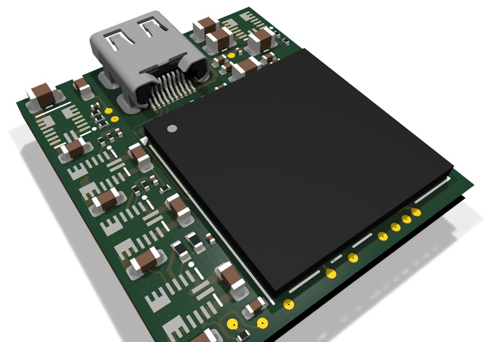
Frontend FPGA board, 14 layers (V9 render; V13 adds 33 small test pads) FPGA-LDO board, Option A (V18 render; V24 adds 12 test pads and two resistors)
FPGA-LDO board, Option A (V18 render; V24 adds 12 test pads and two resistors) ASIC board, bottom (V11 render; V15 is 0.4 mm wider and marked BOTTOM)
ASIC board, bottom (V11 render; V15 is 0.4 mm wider and marked BOTTOM)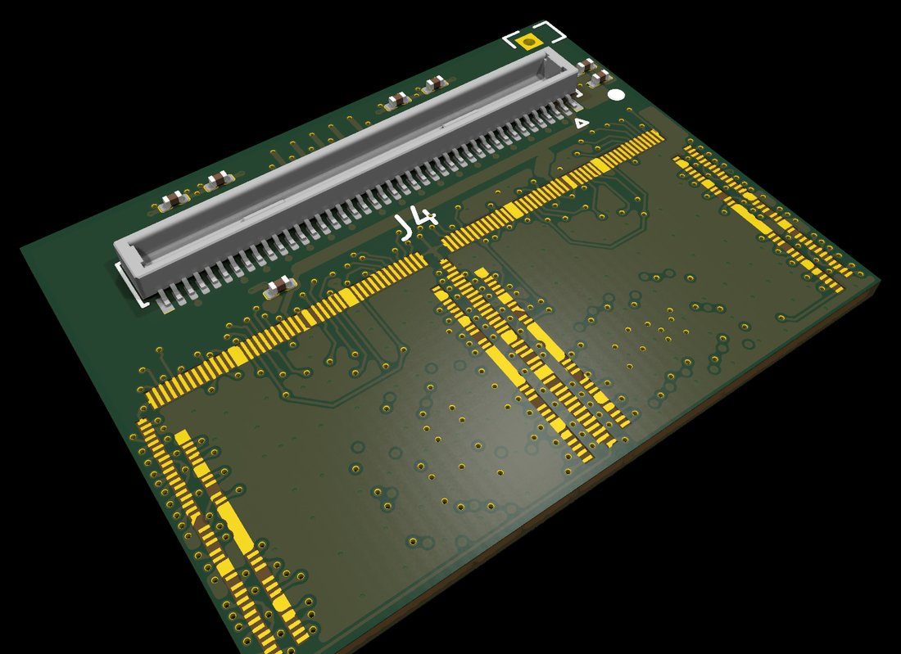
ASIC board, top (V11 render; V15 is 0.4 mm wider and marked TOP)1.3Connections between boards
Each link below is one cable or one board-to-board connector. In this document, connectors are named by their label printed on the board: J means connector, so “J3” is connector number 3 on that board. Board-to-board connectors in the head are Hirose DF40 parts: tiny plug-and-socket pairs that join two boards face to face.
| From → to | Connector | What travels on it |
|---|---|---|
| PC → XEM8310 module | USB socket on the module | Commands and recorded data |
| PC → HDMI Extension Board | J6, the PCIe card edge (4 lanes) | A faster path for commands and data, straight from the PC slot |
| PC → programming switch | J500, USB-C | Loading programs into the FPGAs (JTAG); switch SW600 picks which FPGA |
| XEM8310 → HDMI Extension Board | MC1, MC2, MC3 (the module's three connectors) | Each port's data, clock and commands; 12 V to the module; 3.3 V back from the module |
| HDMI Extension Board → head | Micro-HDMI ports P1–P8, one cable each | Recorded data (to the PC), clock and commands (to the head), programming lines, and 5 V power |
| Frontend → FPGA-LDO board | J1 + J2, two connectors, 140 contacts | ASIC data, clocks, settings and stimulation control; the head's 3.3 V supply |
| FPGA-LDO board → ASIC boards | J4 (ASIC1–4) and J3 (ASIC5–8), 80 contacts each | Everything each group of four ASICs needs: signals, nine supply voltages and ground |
| Bottom → top ASIC board | 80-contact connector | The same 80 lines, passed straight through |
Design details exact contents of each link
- PCIe x4 on J6: 4 lanes to XEM8310 MGT bank 225, 100 MHz reference clock, PERST#, SMBus, WAKE#.
- JTAG on J500: FT232H JTAG programmer; SW600 selects the XEM8310 or one of the eight Frontends.
- Micro-HDMI pins: 3/5 recording data (Frontend GTP transmitter → XEM GTY receiver); 6/8 32 MHz clock (LVDS); 9/11 command with SYNC (LVDS); 12/14 separate SYNC (ports 3–6 only); 2/15/17/18 JTAG; 19 = 5 V power.
- Frontend → FPGA-LDO:
VIN_3V3on J2.68–70;VIN_5Von J1.32 (not used by the FPGA-LDO board; it goes to a test point only). - Each 80-pin ASIC port: 64 signal, 9 supply, 6 ground (analog 42, 44; digital 3, 5, 46, 48), 1 analog input (AC_IN, pin 69). Pins 3 and 5 changed from not connected to digital ground in pin map V7 (16 Nov 2026). Pin map V8 (19 Nov 2026) gave each bottom ASIC board its own latch line on pin 61, so every ASIC board now has its own settings clock and its own latch.
1.4Design files
Each board's page on the project website, and the design files of the exact version this datasheet describes. The KiCad ZIP is the complete project (schematic, board layout and libraries) for KiCad 10 (the files were saved with KiCad 10 and do not open in KiCad 9). Fabrication files are what the board maker needs: Gerbers (the copper and drill drawings), the bill of materials (BOM), the part placement list, a table that says where pin 1 of each part goes, and the notes to paste into the order. For the Frontend and the FPGA-LDO board, the fabrication files are those of the board in its test frame, because the frame is the panel in which the board is made and assembled. The HDMI Extension Board's fabrication files (order files V1) were made from the unchanged V39 board, so they include its test pads. Edit times are those of the saved files.
| Board | Website | KiCad project | Schematic | Fabrication files |
|---|---|---|---|---|
| HDMI Extension Board V39 · edited 18 Nov 2026, 12:22 CST; order files V1 made 19 Nov 2026, 07:38 CST | Board page | KiCad ZIP | Gerbers, BOM, placement, pin-1 table, layers PDF, order note | |
| Frontend FPGA board, 14 layers V13 (schematic V57) · edited 19 Nov 2026, 11:24 CST; test frame V3 edited 11:24 CST, its order files made 11:27 CST | Board page | KiCad ZIP (board only), KiCad ZIP (board in its test frame) | Test frame: Gerbers, BOM, placement, pin-1 table, order notes | |
| FPGA-LDO board A, layout V24 (schematic V43) · edited 19 Nov 2026, 11:46 CST; test frame V4 edited 11:48 CST, its order files made 11:49 CST | Board page | KiCad ZIP (board only), KiCad ZIP (board in its test frame) | Test frame: Gerbers, BOM, placement, pin-1 table, layers PDF, order notes | |
| ASIC board, bottom, V15 · edited 19 Nov 2026, 07:44 CST | Board page | KiCad ZIP | Gerbers, BOM, placement, order notes | |
| ASIC board, top, V15 · edited 19 Nov 2026, 07:43 CST | Board page | KiCad ZIP | Gerbers, BOM, placement, order notes |
Pin map V8 (19 Nov 2026), the agreed list of which signal is on which connector pin: the 140 contacts between the Frontend and the FPGA-LDO board (CSV), the 160 ASIC port pins (CSV), and the matching list of FPGA pins for the Frontend's program, pin file V4 (XDC). The pin file has not yet been run through the FPGA tools (Vivado).
The board pages and files are the same ones the overview's board cards offer. No fabricator has reviewed these files yet, and nothing has been ordered. The XEM8310 module is a bought part; its documentation is at docs.opalkelly.com.
2Power
In short. One 12 V adapter plugs into the HDMI Extension Board. That board makes 5 V and sends it to each head through pin 19 of its cable. On the head, the Frontend turns 5 V into 3.3 V, and every other voltage on the head is made from that 3.3 V.
A few words used in this section: a rail is one supply voltage that powers several parts. A regulator turns one voltage into another, steady one. A test point (TP) is a small pad where you can touch a meter probe to measure a voltage. Parts are named by their printed labels: U is a chip, R a resistor, C a capacitor, D a diode or LED.
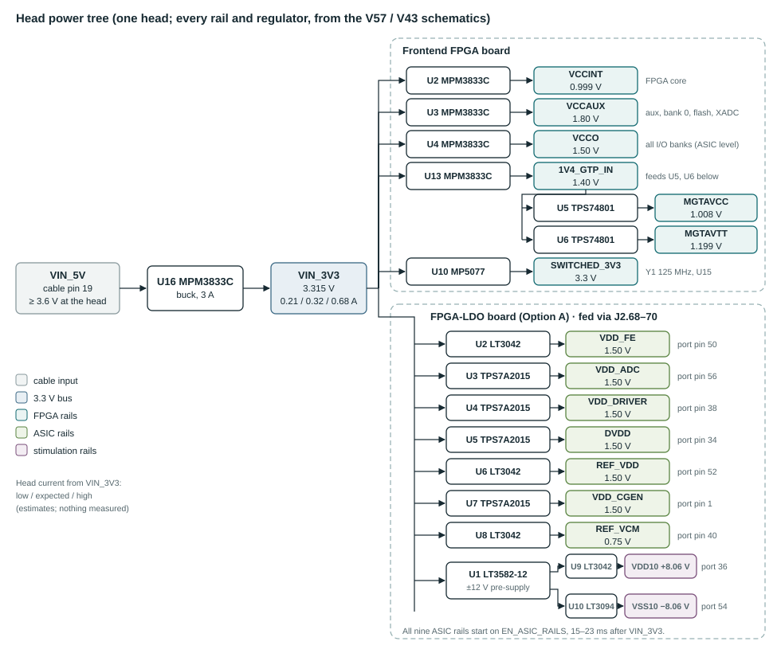
2.1HDMI Extension Board
This board: website page · KiCad files · schematic PDF · all files in section 1.4.
The 12 V from the adapter goes two ways: straight to the XEM8310 module, and to a 5 V regulator for the heads. Each of the eight ports then has its own electronic switch. The switch limits the current to that port: if a head or cable draws too much, the switch turns that port off, lights its red LED and tries again a moment later.
| Item | What to know |
|---|---|
| 12 V input | Barrel socket J4. Use a 12 V adapter (10.8–13.2 V), center pin positive, 5.5 mm plug with a 2.0 mm pin, rated above 5 A. |
| 5 V for the heads | One regulator (U700) makes 5.02 V, up to 6 A, for all eight ports. |
| Current limit per port | Each port switch turns off above 0.637 A at the least (0.696 A typical). |
| When ports turn on | All eight at the same moment, once the 5 V supply is steady (within 94–107 % of its target). |
| Red LEDs | One per port (D701–D708). Lit means that port is overloaded, too hot, or fed back from the head. |
| Protection | None on the 12 V input: no fuse and no protection against a reversed plug. Use only the specified adapter. |
| Voltage test holes | J920, a row of nine holes for checking the module's voltages with a meter (section B5). |
| Test pads | 44 bare pads for a meter or oscilloscope probe. V39 added 20 of them (TP720–TP739): 12 on the programming (JTAG) lines, the USB supply and the enable and status signals, and 8 ground pads beside them. No part moved and no part was added. |
Design details HDMI Extension Board power parts
| Item | Value |
|---|---|
| Input | 12 V into J4, Same Sky PJ-063AH barrel jack (8 A, 24 V; 2.0 mm pin, 5.5 mm plug; center positive). Adapter: 12 V, within 10.8–13.2 V, rated above 5 A. |
| 12 V bulk capacitance | C5 220 µF 25 V, C6 100 nF, C700–C703 4×10 µF 50 V |
| XEM8310 supply | +VDCIN straight to MC2 pins 1–4. Module accepts 7.5–15 V; its fansink wants 10.8–13.2 V; MC2 carries up to 8 A. |
| 5 V for the heads | U700 TI TPSM63606: R700 40.2 kΩ / R701 10 kΩ → 5.02 V; R702 13 kΩ → 1 MHz; C704–C707 4×47 µF; 6 A rating |
| Port switches | U701–U708 TI TPS2553 (auto-retry). R711–R718 37.4 kΩ → current limit 637 / 696 / 764 mA (min / nom / max; 630–771 mA including the 1 % resistor). C721–C728 1 µF on each output. Red FAULT LED D701–D708 and test point TP701–TP708 per port. |
| Port switch-on | All eight together, once U700 reports 5 V within 94–107 %; no staggering |
| Worst-case total | 8 ports at maximum limit = 6.1 A against U700's 6 A rating (trip 8.3 A); only with all ports overloaded at once |
| Board 3.3 V | From the XEM8310 (MC2.70); this board draws a few mA (JTAG switches, monitor) from a rail with a 6.6 W budget |
| PCIe slot power | Not used. Slot 12 V reaches only a test point. Slot 3.3 V only powers level shifter U4; slot 3.3 Vaux feeds the sideband pull-ups through load switch U5. |
| Second 12 V input | None; J4 is the only power input. |
| Protection | No fuse, reverse-polarity or surge protection on +VDCIN. |
| Test holes | J920: +1.2V_DDR, VIO1, +1.8V, DGND, +VDCIN, DGND, +3.3V, VIO3, VIO2 |
Sources. TI TPSM63606 datasheet SLVSGB4B, Fig. 9-1, Table 8-1; TI TPS2553 datasheet SLVS841G, Table 9-2; Opal Kelly, Powering the XEM8310 (the module's supply range); Same Sky PJ-063AH drawing; HDMI Extension Board V39 schematic and netlist.

+VDCIN; C5 and C6 smooth it; TP710 is the 12 V test point. Click a schematic to open it full size.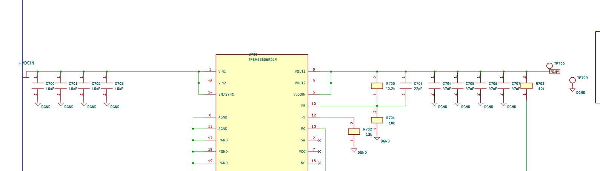
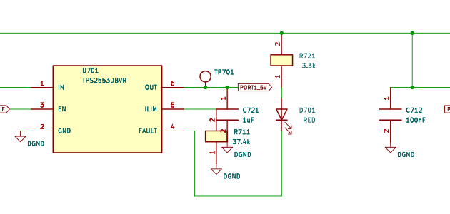
A head needs at most about 0.68 A at 3.3 V. The cable's thin wires lose some voltage, so the 5 V arriving at the head is lower when the head draws more. The Frontend's 3.3 V regulator keeps working until its input falls to about 3.4 V, so the voltage loss itself is not the problem. The real limit is the port switch, which turns off above 0.637 A. A lower input voltage makes the regulator draw more current to deliver the same power, so a thinner (higher-resistance) cable leaves less power for the head:
| Cable resistance (both wires) | Voltage arriving at the head | Most the head can draw at 3.3 V |
|---|---|---|
| 0.5 Ω | 4.62 V | about 0.80 A |
| 1 Ω | 4.30 V | about 0.75 A |
| 2 Ω (thin 2 m cable) | 3.67 V | about 0.64 A |
| above about 2.4 Ω | below 3.4 V | the 3.3 V regulator can no longer hold 3.3 V |
If a head draws more than its cable can deliver, it does not get the extra current: its port switch turns off and retries, and the red LED lights. Answer: the head needs 0.32 A typically and 0.68 A at worst (section 2.5); the chosen 3 ft cable delivers up to about 0.74–0.78 A (section 2.6).
Assumptions: a 5.02 V source, 0.125 Ω for the port switch and board, and 90 % regulator efficiency (assumed, not read from the datasheet curve). The Frontend regulator is U16, MPS MPM3833C (2.75–6 V in, 3 A, 100 % duty in dropout, 130 mΩ dropout resistance).
2.2Frontend FPGA board
This board: website page · KiCad files · schematic PDF · all files in section 1.4.
All of a head's power arrives on cable pin 19 as 5 V. A regulator on the Frontend turns it into 3.3 V. That 3.3 V feeds the Frontend's other regulators and, through connector J2, the whole FPGA-LDO board.
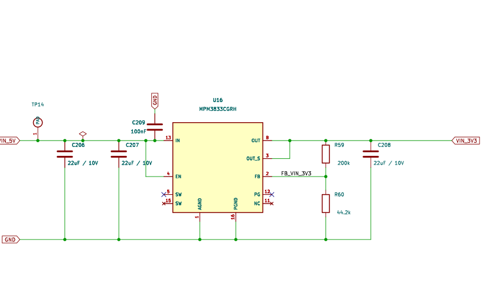
VIN_5V, test point TP14) comes in on the left; the 3.3 V output (VIN_3V3, TP2) leaves on the right. R59/R60 set the voltage.The Frontend's FPGA (an AMD Artix-7, part XC7A35T-2CSG325C) needs several different supply voltages, each for a different part of the chip:
| Rail name | Voltage | What it powers |
|---|---|---|
| VIN_3V3 | 3.315 V | Every other regulator on the head |
| VCCINT | 0.999 V | The FPGA's internal logic (its “core”) |
| VCCAUX | 1.80 V | The FPGA's auxiliary circuits and its start-up pins; the memory chip (flash) that holds the FPGA's program; the 25 MHz clock oscillator |
| VCCO | 1.50 V | The FPGA's input and output pins: every line to the ASICs and the cable's clock and command inputs. 1.5 V is the ASICs' signal level. |
| MGTAVCC | 1.008 V | The FPGA's high-speed transmitter, which sends the data down the cable |
| MGTAVTT | 1.199 V | The same transmitter's output stage |
| SWITCHED_3V3 | 3.3 V | The 125 MHz clock oscillator and a level shifter; switched on after the core is up |
Design details Frontend regulators
| Rail | Made by | Feeds | Set by |
|---|---|---|---|
| VIN_3V3, 3.315 V | U16 MPM3833C (2.75–6 V in, 3 A) | all regulators below; FPGA-LDO board | R59 / R60 |
| VCCINT, 0.999 V | U2 MPM3833C | FPGA core (21 balls) | R1 / R2 |
| VCCAUX, 1.80 V | U3 MPM3833C | FPGA auxiliary, bank 0 (configuration) at 1.8 V, VCCBATT, 1.8 V flash U7, XADC (via L1), 25 MHz oscillator (via L3) | R4 / (R5 ∥ R55) |
| VCCO, 1.50 V | U4 MPM3833C | all user I/O banks (20 balls): every ASIC line and the cable LVDS, at the ASICs' 1.5 V level | R7 / R8 |
| 1V4_GTP_IN, 1.40 V | U13 MPM3833C | U5, U6 | R41 / R42 |
| MGTAVCC, 1.008 V | U5 TPS74801DRCR | transceiver (4 balls) | R10 (1.3 kΩ, 1 %) / R11 |
| MGTAVTT, 1.199 V | U6 TPS74801DRCR | transceiver (5 balls), MGTRREF | R13 / R14, 0.1 % |
| SWITCHED_3V3 | U10 MP5077 load switch | 125 MHz oscillator Y1, level shifter U15 | R37 (limit) |
MGTAVCC tolerance. R10 is 1.3 kΩ, the value of the Trenz TE0714 reference design (TE0714 REV04 schematic, p. 9), fitted as a 1 % part that the assembler stocks (JLC part C226451). With R11 (4.99 kΩ) the rail is 0.8 V × (1 + 1.3 / 4.99) = 1.008 V. The regulator part number TPS74801DRCR can be delivered with an older chip (accurate to ±2 %) or a newer one (±1 %) (TI TPS748 data sheet, Rev. N, section 5.5, p. 6, and Table 8-1, p. 33). Taking the regulator, both resistors, a 60 °C temperature rise and the feedback pin current all at their worst at once, MGTAVCC is 0.982–1.035 V with the older chip and 0.993–1.024 V with the newer one. AMD asks for 0.97–1.03 V (AMD DS181 v1.27.1, Table 2), so only the older chip at its worst is over, by 5 mV; the absolute maximum is 1.1 V (Table 1). The owner accepted this on 19 Nov 2026. Measure MGTAVCC on test point TP7 of the first board.
Power-up order. The rails switch on one after another, and each waits until the one before it is steady (its regulator signals “power good”). The order is: 5 V arrives → 3.3 V → core → auxiliary 1.8 V (together with the switched 3.3 V) → I/O 1.5 V → the transmitter's 1.4 V input (switched on through FPGA pin M15, which a resistor holds high) → MGTAVCC. When both the I/O 1.5 V and MGTAVCC are good, MGTAVTT starts and, at the same moment, a reset chip (U12) starts its delay; it then lets the FPGA start, and the FPGA loads its program from the flash memory chip (U7).

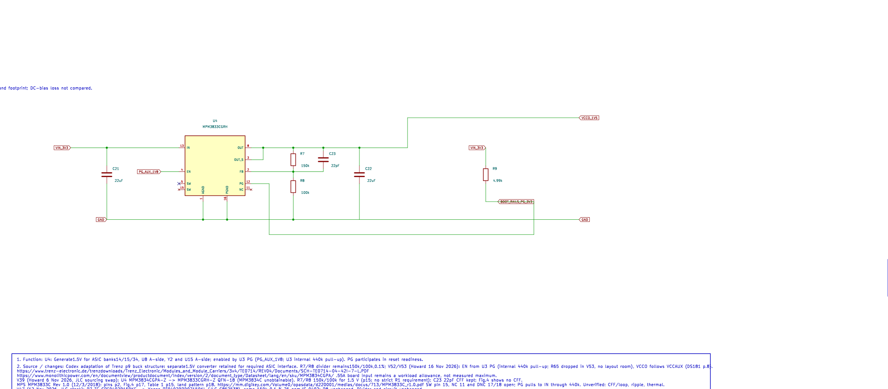
PG_AUX_1V8), so the I/O supply starts only after the auxiliary 1.8 V.Design details power-up sequence
5 V arrives → VIN_3V3 → VCCINT → (VCCAUX, SWITCHED_3V3, both on PG_CORE_1V0) → VCCO (on PG_AUX_1V8) → FPGA pin M15 (EN_GTPWR_1V5, pulled up to VCCO by R58 4.99 kΩ) → level shifter U15 (VCCO side to SWITCHED_3V3 side) → EN_GTPWR_3V3 (R57 10 kΩ pull-down) → U13 makes the 1.4 V GTP supply → U13 power-good (PG_GTP_1V4) → U5 makes MGTAVCC. U4's and U5's power-good outputs are joined on BOOT_RAILS_PG_3V3 (R9 4.99 kΩ pull-up); when VCCO and MGTAVCC are both good it starts U6 (MGTAVTT) and, at the same moment, U12's reset delay (U12 pin 3). U12 also waits for VCCAUX on its sense input (FLASH_READY_SENSE); then it releases reset → the FPGA configures from flash U7. U6's power-good is not connected, so the reset does not wait for MGTAVTT.
The FPGA's two start-up lines, PROGRAM_B and INIT_B, are each held high by a 4.7 kΩ pull-up to the 1.8 V rail (R17, R18). AMD asks for 4.7 kΩ or less on each (AMD UG470 v1.17, Table 2-4, p. 21).
The transceiver order follows AMD DS181 v1.27.1, p. 8 (MGTAVCC before MGTAVTT). Firmware must keep M15 high: drive it high in the FPGA design (before configuration, R58 holds it high). It cannot switch the GTP supply off on this board: M15 low turns U13 off, U5 loses its input, U5's power-good pulls BOOT_RAILS_PG_3V3 low and U12 resets the FPGA, which starts the sequence again.
AMD, the FPGA maker, recommends powering VCCAUX before VCCO, “to achieve minimum current draw and ensure that the I/Os are 3-stated at power-on” (AMD DS181 p. 8). In plain terms, the FPGA's pins then stay switched off, instead of briefly driving the ASIC lines, while power comes up. VCCO powers every pin that drives the ASICs. This is now built: the 1.8 V regulator's power-good output (U3 pin 12) switches on the 1.5 V regulator (U4 pin 4), on the new net PG_AUX_1V8, routed on copper layer 6. No extra resistor is needed, because U3's power-good pin has a built-in 440 kΩ pull-up to its 3.3 V input. VCCO now waits until VCCAUX is within 10 % of its value, about 1.5 ms later.
How much the Frontend draws (estimate). These are estimates; there is no power calculation from the FPGA tools (Vivado) yet, and nothing has been measured. The FPGA's internal logic draws the most and is the least certain number.
| Low | Expected | High | |
|---|---|---|---|
| Frontend power | 0.47 W | 0.77 W | 1.40 W |
| Frontend current from the 3.3 V rail | 0.14 A | 0.23 A | 0.42 A |
2.3FPGA-LDO board
This board: website page · KiCad files · schematic PDF · all files in section 1.4.
The ASICs need nine separate, very quiet supply voltages. The FPGA-LDO board makes all nine from the head's 3.3 V. Each voltage is shared by all eight ASICs: it leaves on the same pin of both ASIC connectors, J4 (ASIC1–4) and J3 (ASIC5–8).
All nine regulators start together, about 15–23 ms after the 3.3 V arrives. A slow resistor-capacitor delay (R1 10 kΩ, C3 4.7 µF) on the line EN_ASIC_RAILS sets this delay, so the ASICs power up only after the head's other supplies are steady.

EN_ASIC_RAILS (TP4), and the single joint NT1 between digital ground (TP5) and analog ground (TP6). The note box is the schematic's own explanation.The board has two grounds: analog ground (AGND), the quiet reference for the recording circuits, and digital ground (DGND), the return for the digital signals. They join at a single point on this board (a “net tie”, NT1), so noisy digital currents do not flow through the analog ground.
Design details ground contacts to the Frontend
The two connectors to the Frontend, J1 and J2, carry 15 ground contacts. A via is a small plated hole that joins a pad to the copper layers inside the board; here it takes each ground contact to the two ground planes by the shortest path. Since layout V23 (19 Nov 2026), 11 of the 15 ground contacts have a via at the pad. Two more (J1.41 and J2.50) have their own via within 2.3 mm. The last two (J2.15 and J2.27) have none of their own: they reach the vias of their neighbours through the ground strip under the connector, about 2.7 mm and 4.0 mm of copper. A via at those two pads would cut the analog-ground strips that serve regulators U3 and U10, so the owner decided on 19 Nov 2026 to leave them as they are.
| Rail (name in the ASIC) | Voltage | Regulator | Port pin | Notes |
|---|---|---|---|---|
| VDD_FE | 1.50 V | U2 LT3042 | 50 | very low noise (about 0.8 µV rms) |
| VDD_ADC | 1.50 V | U3 TPS7A2015 | 56 | |
| VDD_DRIVER | 1.50 V | U4 TPS7A2015 | 38 | |
| DVDD | 1.50 V | U5 TPS7A2015 | 34 | digital supply; also holds the chip-reset line high through R19 |
| REF_VDD | 1.50 V | U6 LT3042 | 52 | very low noise |
| VDD_CGEN | 1.50 V | U7 TPS7A2015 | 1 | 1.5 V as the ASIC designer answered (originally 1.6 V) |
| REF_VCM | 0.75 V | U8 LT3042 | 40 | very low noise; resistor R802 gives it a small steady load |
| VDD10 | +8.06 V | U9 LT3042 | 36 | stimulation (positive side); made from +12 V |
| VSS10 | -8.06 V | U10 LT3094 | 54 | stimulation (negative side); made from -12 V |
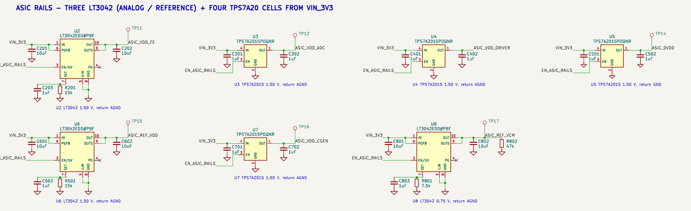
EN_ASIC_RAILS. R802 (47 kΩ), beside the output capacitor of U8, is the load on the 0.75 V reference.Design details why the 0.75 V reference has a load resistor
When it is set below 1 V, the LT3042 regulator needs at least 10 µA of load to stay stable (ADI LT3042 data sheet, Electrical Characteristics, “Minimum Load Required” and Note 13, p. 5). REF_VCM is 0.75 V, and the current the ASICs draw from it is not known. Since layout V22 (19 Nov 2026), resistor R802 (47 kΩ, 1 %) therefore sits between REF_VCM and analog ground. It draws 0.75 V / 47 kΩ = 16 µA (15.5 µA with the voltage 2 % low and the resistor 1 % high), so the regulator is stable whatever the ASICs draw.
The names come from the ASIC: FE suggests the input amplifiers (“front end”), ADC the analog-to-digital converter, CGEN the clock generator, VCM a mid-level reference (0.75 V is half of 1.5 V). The ASIC designer has not documented exactly which circuits each rail feeds.
Stimulation supply. The ±8.06 V rails are made in two steps. First a small converter (U1, ADI LT3582-12) makes +12 V and -12 V from 3.3 V. Then two quiet regulators bring those down to ±8.06 V. Two solder jumpers (JP1, JP2) join the two steps; cutting them lets a bench supply feed the stimulation regulators instead, at test points TP8 and TP9 with the return at TP6.

Safe state before the FPGA starts. Until the FPGA has loaded its program, its pins are not driven and could float to any level. Resistors (“pull-downs”) therefore hold the stimulation, reset and clock lines low, so no ASIC can start stimulating by accident; one resistor holds the chip-reset line high.
Design details FPGA-LDO board ratings and pull-down resistors
LT3042 is rated 200 mA and TPS7A20 300 mA, against about 55 mA for all eight ASICs' low-voltage rails together. Sixteen 10 kΩ pull-downs hold these lines low: STIM_EN, STIM_START, STIM_CHB and STIM_CLK (R2–R5); FE_RESET and IMP_TST (R16, R17); the latch of each bottom ASIC board (R18 for port J4, R28 for port J3); and the two ASIC clocks, the four settings clocks and the two top-board latches (R20–R27). R19 holds CHIP_RESET high. R28 was added in layout V24 (19 Nov 2026) together with the second bottom-board latch line.
Stimulation. 128 of each ASIC's 512 sites can stimulate (4 stimulators for every 16 amplifiers, 64 per side of the chip). A stimulation pulse is biphasic: current flows one way, then the other way, so the net charge left in the tissue is close to zero. The ASIC balances the charge passively. The current is set by a 4-bit code (16 levels), about 1.5 µA per step, up to about 22.5 µA, at under 200 pulses per second. Pulses can be monopolar or bipolar and are fully programmable. The output can swing up to ±10 V by the chip's design (its “compliance”). In the ASIC designer's bench test, the stimulator gave about +20 / -21 µA into a 370 kΩ test load (about ±7.4–7.8 V).

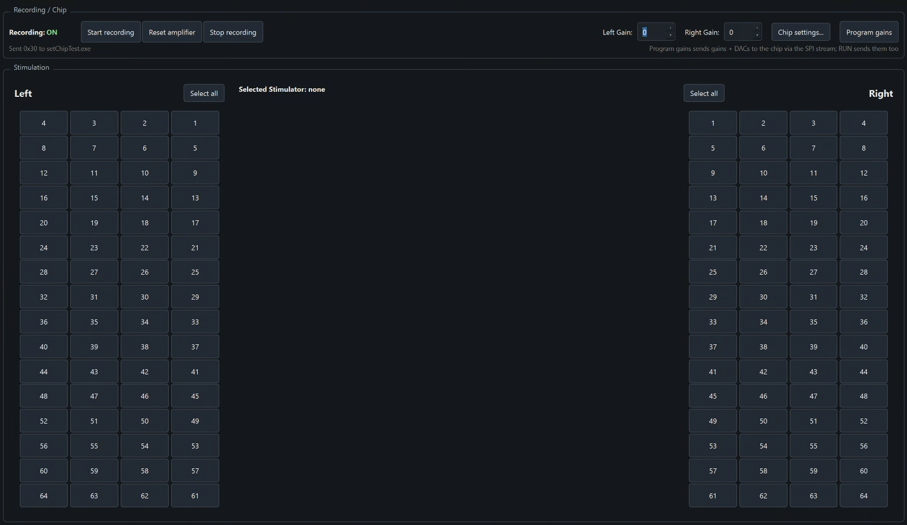
The stimulator pushes a set current, so the voltage it needs is current times the electrode's resistance to the tissue (its impedance): V = I × Z. The table shows that voltage, positive in one half of the pulse and negative in the other:
| Site impedance | at 22.5 µA (maximum) | at 1.5 µA (lowest step) | Note |
|---|---|---|---|
| 10 kΩ | ±225 mV | ±15 mV | |
| 100 kΩ | ±2.25 V | ±150 mV | |
| 300 kΩ | ±6.75 V | ±450 mV | |
| 370 kΩ | ±7.4–7.8 V (measured) | ±0.56 V | at the edge of the ±8.06 V supply |
| 1 MΩ | — | ±1.5 V | full current not reachable |
Result: with ±8.06 V supplies, the full current is possible only into sites of about 350 kΩ or less.
Design details stimulation power
The supply provides 8.06 V × I per stimulator (0.18 mW at 22.5 µA); only I2Z reaches the electrode. Worst case: all 1,024 stimulators of a head at maximum in the same phase take 23 mA from one rail (186 mW), about 0.13 A extra from VIN_3V3.
2.4ASIC boards
This board: website page · bottom KiCad · top KiCad · bottom PDF · top PDF · all files in section 1.4.
The bottom and top ASIC boards are wired the same way. Each holds two ASICs and 31 small capacitors that steady their supplies: a 10 nF and a 100 nF on each supply pin pair, and one more 100 nF (C63) on VDD_CGEN beside the first chip. Every supply and both grounds sit on the same pin of the board's two connectors (J3 and J4), so the bottom board passes power straight up to the top board. One port feeds four ASICs. Analog ground (pins 42, 44) and digital ground (pins 3, 5, 46, 48) stay separate on the ASIC boards; they join only on the FPGA-LDO board. Each supply uses one connector contact rated 0.3 A, against a largest load of about 12 mA.
To tell the two board types apart, each board is printed with TOP or BOTTOM and its version (V15) on both faces. These boards are made at PCBWay and have no test pads.
Design details ASIC board connectors
J3, on the underside, is a Hirose DF40C-80DS-0.4V(51) socket; J4, on the top side, is a Hirose DF40C-80DP-0.4V(51) plug. These are the same two parts as on the FPGA-LDO board's ASIC ports, so every joint in the stack is one socket on one plug, and a mated pair holds the boards 1.5 mm apart (Hirose DF40 series, catalog of Jan. 2025, p. 6, 8 and 14). The part numbers are in the schematics and the bills of materials since V15 (19 Nov 2026). The connector has no polarity key (same catalog, p. 8, note 4), so the printed marks and the pin-1 dots are the only guard against a reversed board.
Since ASIC board V10 (17 Nov 2026) every capacitor has a value and a JLC part: 10 nF (C85930) and 100 nF (C307379). The values come from a short talk with the ASIC designer and still need his written check.
2.5Whole-head power budget
This table adds up the current one head takes from its 3.3 V rail. All numbers are estimates; nothing has been measured.
| Current from the head's 3.3 V rail | Low | Expected | High |
|---|---|---|---|
| Frontend board | 0.14 A | 0.23 A | 0.42 A |
| Eight ASICs' low-voltage supplies | 0.05 A | 0.07 A | 0.13 A |
| ±8 V stimulation supply | 0.02 A | 0.02 A | 0.13 A (all stimulators at maximum) |
| Head total | 0.21 A | 0.32 A | 0.68 A |
These will be firmed up with a power calculation for the FPGA (from the Vivado tools) and the ASIC designer's current for each supply.
2.6Cable
Chosen: MyCableMart Micro-HDMI to Micro-HDMI “with Ethernet”, 3 ft (0.91 m), listed with 32 AWG wire (Amazon B014HMWWHA). One per head. AWG is the American wire gauge; a larger number means a thinner wire.
Check the plug size when the cables arrive: the moulded plug must be under 12.5 mm wide (the HDMI Extension Board's eight sockets are 13.1 mm apart) and under about 9.2 mm thick at the head end. MyCableMart does not publish either size.
Any other cable can be used if it meets all of these:
| Requirement | Why |
|---|---|
| Micro-HDMI (Type D) plug at both ends, all 19 pins wired | Both boards use Molex 46765-1001 Micro-HDMI sockets |
| “High Speed HDMI with Ethernet” or better | Pin 2 carries a programming line (JTAG TMS); cables without Ethernet may leave that wire out |
| High Speed (10.2 Gb/s class) | One wire pair carries the recorded data at 2.5–3.125 Gb/s |
| Pin 19 resistance under 1.6 Ω (out and back) | So the worst-case head (0.68 A) stays under the port's 0.637 A limit at 5 V. This cable: about 0.7 Ω at 32 AWG, 1.1 Ω at 34 AWG, so up to 0.78 / 0.74 A is available at 3.3 V |
| Plug under 12.5 mm wide | The sockets are 13.1 mm apart |
Design details what each cable pin carries
3/5 recording data; 6/8 32 MHz clock; 9/11 command with SYNC; 12/14 separate SYNC (ports 3–6); 1 VREF (lets the HDMI Extension Board sense the head); 2, 15, 17, 18 JTAG TMS, TDI, TCK, TDO; 16 ground; 19 +5 V. Check the plug thickness on the first cables.
3Interfaces
In short. This section explains what each connection between boards carries. Section 4 then lists every pin. You need this only to write the FPGA programs or to trace a fault; it is not needed to assemble or run the system.
All connections between boards were checked against the saved designs and the agreed pin map (the fixed list of which signal goes on which connector pin). The current pin map is version V8 (19 Nov 2026). It differs from V7 in one thing: each bottom ASIC board now has its own latch line. The check of V8 against the current board files, on 19 Nov 2026, found no difference.
3.1HDMI cable: HDMI Extension Board port to Frontend J3
Every port uses the same pin roles. The clock, command and SYNC signals are LVDS (low-voltage differential signalling): each signal travels on two wires carrying opposite copies, which makes it robust against noise. “Positive” always meets “positive”. The table shows where each port's signals land on the XEM8310 module. “Quad 224 lane 0” means one of the module's high-speed receivers; “B64_L6” means a pin pair in the module's I/O bank 64. (A bank is a group of FPGA pins that share one supply voltage.)
| Port | Recording data, pins 3/5 (module receiver) | Clock, 6/8 | Command + SYNC, 9/11 | SYNC, 12/14 |
|---|---|---|---|---|
| P1 | quad 224 lane 0 | B64_L6 | B64_L5 | – |
| P2 | quad 224 lane 1 | B64_L19 | B64_L3 | – |
| P3 | quad 224 lane 2 | B64_L13 | B64_L7 | B64_L16 |
| P4 | quad 224 lane 3 | B64_L11 | B64_L15 | B64_L23 |
| P5 | quad 226 lane 0 | B64_L1 | B64_L4 | B64_L22 |
| P6 | quad 226 lane 1 | B64_L8 | B64_L2 | B64_L18 |
| P7 | quad 226 lane 2 | B64_L10 | B64_L9 | – |
| P8 | quad 226 lane 3 | B64_L24 | B64_L21 | – |

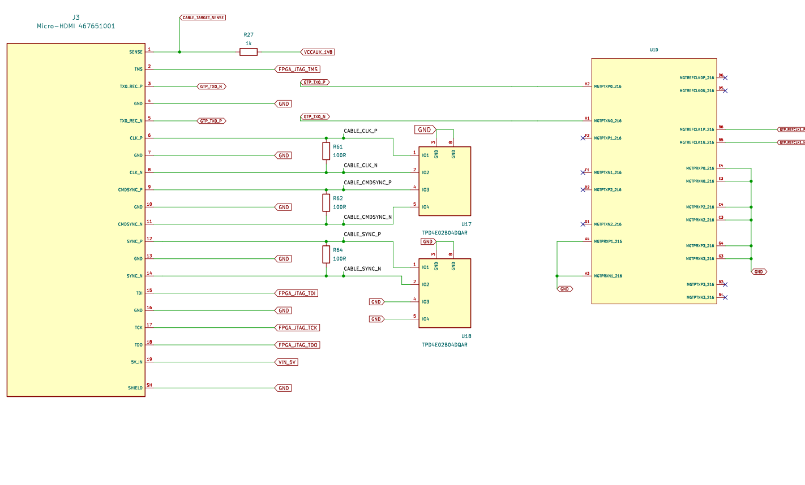
Design details Frontend end of the cable
Recording from GTP TX0 (balls H2/H1); the 32 MHz clock into clock-capable balls P14/R15; command into M14/N14; SYNC into B9/A9. Each LVDS input has a 100 Ω termination and ESD protection. Pin 1 is pulled to 1.8 V through 1 kΩ so the HDMI Extension Board can sense the head for JTAG. (A ball is one solder connection under the FPGA package.)
- Flip the data polarity. The two wires of the recording pair are crossed: the Frontend's negative wire lands on the module's positive input (pin 3). The Frontend program must invert its output: set
TXPOLARITY = 1. - Use the built-in SYNC on ports 1, 2, 7 and 8. These ports have no separate SYNC wire pair. Heads on them must take the SYNC signal carried inside the command stream and ignore pins B9/A9.
- Set the module's I/O voltage to 1.8 V first. Set the XEM8310's VIO1 to 1.8 V before connecting any head; bank 64, which drives the cable clock and commands, runs from VIO1.
- Drive four latch lines. Each of the four ASIC boards in a head has its own settings latch (section 5, “Configuration and stimulation control”). Up to pin map V7 the two bottom boards shared one latch, so a program written for three latch lines must be changed.
3.2Frontend to FPGA-LDO board (J1 + J2, 140 contacts)
Two Hirose DF40C 70-contact connectors with 0.4 mm spacing join the boards: sockets on the back of the Frontend, plugs on the front of the FPGA-LDO board. Contact n meets contact n. All 140 contacts match the pin map on both boards, including every FPGA pin. The head's 3.3 V supply runs on J2 contacts 68–70. The cable's 5 V is also brought across on J1 contact 32, where the FPGA-LDO board connects it only to a test point.
Design details checks
No contact is spare. J1.36 (FPGA ball V14) was the one spare contact up to pin map V7 and was left open on the FPGA-LDO board; since pin map V8 it carries BOARD3_SPI_LATCH, the latch line of the bottom ASIC board on port J3. The check of 19 Nov 2026 covered all 140 contacts and all 160 port pins on FPGA-LDO A layout V24, and the 121 contacts that lead to an FPGA ball on Frontend V13. Contact alignment was confirmed geometrically on 12 Nov 2026, and the connector positions have not changed since.
3.3FPGA-LDO board to ASIC boards (J3, J4; 80 contacts each)
The FPGA-LDO board has two ASIC ports. Port J4 (socket, on the back) serves ASIC1–4; port J3 (plug, on the front) serves ASIC5–8. On each port the bottom ASIC board holds the first two chips and the top board the next two. The bottom board passes all 80 lines straight up to the top board. Each port has 64 signal lines, 9 supply lines, 6 ground contacts (analog ground 42 and 44; digital ground 3, 5, 46 and 48) and 1 analog input (AC_IN, pin 69). All 160 port pins and every ASIC pad name match the pin map (V8). Pin 61 of each port is the latch line of that port's bottom board; since pin map V8 the two ports no longer share it. Pin map V7 had turned pins 3 and 5 from unused into digital ground.
3.4Host side
The XEM8310 module plugs into the HDMI Extension Board through its three connectors MC1–MC3; section 4.5 lists every module pin the board uses. The PC slot connector (J6, PCIe with 4 lanes) goes to the module's high-speed bank 225. The programming socket is J500 (USB-C), using an FT232H USB-to-JTAG chip.
Both FPGA pin lists were checked against the designs. The Frontend's list is pin file V4 (19 Nov 2026, for schematic V57): all of its 129 pin assignments agree with the FPGA pins of Frontend V13. The HDMI Extension Board's 56 signals were checked on 16 Nov 2026 and all reach the intended connector pins; V39 changed none of those connections. Neither list has yet been run through the FPGA tools (Vivado).
4Pinouts
In short. Complete pin lists for the cable, the Frontend FPGA, and every board-to-board connector, generated directly from the saved schematics. Signal names are shown exactly as they appear in the schematics, so you can search for them there.
4.1Micro-HDMI cable (19 pins)
Both ends use the same Micro-HDMI socket (Molex 46765-1001). The left columns are the HDMI Extension Board end (port P1 shown; every port is wired the same way, except that only ports P3–P6 connect the separate SYNC pair). The right column is the head end, the Frontend's socket J3.
| Pin | What it carries | HDMI Extension Board (port P1, J610) | Frontend (J3) |
|---|---|---|---|
| 1 | head sense / JTAG voltage reference | HDMI1_VREF | CABLE_TARGET_SENSE |
| 2 | JTAG TMS | HDMI1_JTAG_TMS | FPGA_JTAG_TMS |
| 3 | recording data, one wire | MGT_RXP0_224 | GTP_TX0_N |
| 4 | ground | DGND | GND |
| 5 | recording data, other wire | MGT_RXN0_224 | GTP_TX0_P |
| 6 | 32 MHz clock + | B64_L6P | CABLE_CLK_P |
| 7 | ground | DGND | GND |
| 8 | 32 MHz clock - | B64_L6N | CABLE_CLK_N |
| 9 | command + SYNC + | B64_L5P | CABLE_CMDSYNC_P |
| 10 | ground | DGND | GND |
| 11 | command + SYNC - | B64_L5N | CABLE_CMDSYNC_N |
| 12 | separate SYNC + (ports 3–6) | not connected | CABLE_SYNC_P |
| 13 | ground | DGND | GND |
| 14 | separate SYNC - (ports 3–6) | not connected | CABLE_SYNC_N |
| 15 | JTAG TDI | HDMI1_JTAG_TDI | FPGA_JTAG_TDI |
| 16 | ground | DGND | GND |
| 17 | JTAG TCK | HDMI1_JTAG_TCK | FPGA_JTAG_TCK |
| 18 | JTAG TDO | HDMI1_JTAG_TDO | FPGA_JTAG_TDO |
| 19 | +5 V power | PORT1_5V | VIN_5V |
Ports P1–P8 are sockets J610–J617. On ports P1, P2, P7 and P8, pins 12 and 14 are not connected on the HDMI Extension Board.
4.2Frontend FPGA pins (AMD XC7A35T-2CSG325C)
Every signal pin of the Frontend FPGA, from the saved schematic (V57). The FPGA sits in a ball-grid package: each pin is a solder ball named by a row letter and a column number (for example R2). Pins are grouped by bank; banks 14, 15 and 34 run at 1.5 V (the ASIC signal level), bank 0 at 1.8 V (configuration), bank 216 holds the high-speed transmitter. “Connects to” lists the other parts on the same wire: J1/J2 are the connectors to the FPGA-LDO board, J3 the cable socket.
Bank 0 (configuration, 1.8 V).
| Ball | Ball function | Signal | Connects to |
|---|---|---|---|
| E8 | CCLK_0 | FPGA_QSPI_CCLK | R49.2, TP30.1, U8.1 |
| F8 | TCK_0 | FPGA_JTAG_TCK | J3.17 |
| F12 | DONE_0 | FPGA_DONE | R38.2, TP12.1 |
| J9 | GNDADC_0 | GNDADC_XADC | L2.2 |
| K9 | VREFN_0 | GNDADC_XADC | L2.2 |
| K10 | VP_0 | GNDADC_XADC | L2.2 |
| L9 | VN_0 | GNDADC_XADC | L2.2 |
| L10 | VREFP_0 | GNDADC_XADC | L2.2 |
| P10 | PROGRAM_B_0 | FPGA_PROGRAM_B | R17.2, TP35.1, U11.6 |
| R8 | TMS_0 | FPGA_JTAG_TMS | J3.2 |
| T8 | TDO_0 | FPGA_JTAG_TDO | J3.18 |
| T9 | TDI_0 | FPGA_JTAG_TDI | J3.15 |
| T10 | INIT_B_0 | FPGA_INIT_B | R18.2, TP11.1, U11.4 |
Bank 14 (1.5 V).
| Ball | Ball function | Signal | Connects to |
|---|---|---|---|
| J18 | L3P_T0_DQS_PUDC_B | FPGA_PUDC_B | R25.2 |
| K15 | L5N_T0_D07 | ASIC8_DATA3 | J1.25 |
| K16 | L1P_T0_D00_MOSI | FPGA_QSPI_DQ0 | R50.2, U8.3 |
| K17 | L4P_T0_D04 | ASIC8_DATA2 | J1.29 |
| K18 | L3N_T0_DQS_EMCCLK | ASIC6_DATA2 | J1.28 |
| L14 | IO0 | ASIC8_DATA4 | J1.23 |
| L15 | L6P_T0_FCS_B | FPGA_QSPI_CS_N | R19.2, U8.2 |
| L17 | L1N_T0_D01_DIN | FPGA_QSPI_DQ1 | R54.1, U8.4 |
| L18 | L4N_T0_D05 | ASIC6_DATA3 | J1.26 |
| M14 | L8P_T1_D11 | CABLE_CMDSYNC_P | J3.9, R62.1, U17.4, U17.7 |
| M15 | L6N_T0_D08_VREF | EN_GTPWR_1V5 | R58.2, TP45.1, U15.3 |
| M16 | L7P_T1_D09 | ASIC8_SPI_DL | J1.21 |
| M17 | L7N_T1_D10 | ASIC6_DATA4 | J1.24 |
| N14 | L8N_T1_D12 | CABLE_CMDSYNC_N | J3.11, R62.2, U17.5, U17.6 |
| N16 | L9P_T1_DQS | ASIC8_SPI_DR | J1.19 |
| N17 | L9N_T1_DQS_D13 | STIM_CHIP4_SPI_DL | J1.22 |
| N18 | L10P_T1_D14 | STIM_CHIP4_SPI_DR | J1.20 |
| P14 | L12P_T1_MRCC | CABLE_CLK_P | J3.6, R61.1, U17.1, U17.10 |
| P15 | L11P_T1_SRCC | ASIC8_CLK32MHz_Out | J1.13 |
| P16 | L11N_T1_SRCC | ASIC8_SYNC | J1.17 |
| P18 | L10N_T1_D15 | ASIC6_SYNC | J1.18 |
| R13 | L19P_T3_A10_D26 | ASIC8_DATA5 | J1.11, TP47.1 |
| R15 | L12N_T1_MRCC | CABLE_CLK_N | J3.8, R61.2, U17.2, U17.9 |
| R16 | L14P_T2_SRCC | ASIC6_CLK32MHz_Out | J1.16 |
| R17 | L14N_T2_SRCC | ASIC6_DATA6 | J1.10 |
| R18 | L15P_T2_DQS_RDWR_B | ASIC6_DATA5 | J1.12 |
| T12 | L22P_T3_A05_D21 | ASIC7_READ | J1.33 |
| T14 | L13P_T2_MRCC | CLK25_PL | R44.2, R63.1, TP44.1 |
| T15 | L13N_T2_MRCC | ASIC8_DATA6 | J1.9 |
| T17 | L16P_T2_CSI_B | ASIC6_DATA8 | J1.6 |
| T18 | L15N_T2_DQS_DOUT_CSO_B | ASIC6_DATA7 | J1.8 |
| U9 | L24P_T3_A01_D17 | ASIC7_DATA6 | J2.40 |
| U12 | L22N_T3_A04_D20 | ASIC8_DATA1 | J1.31 |
| U14 | L20P_T3_A08_D24 | ASIC8_DATA7 | J1.7 |
| U15 | L17P_T2_A14_D30 | ASIC8_READ | J1.3 |
| U16 | L17N_T2_A13_D29 | ASIC8_DATA8 | J1.5 |
| U17 | L16N_T2_A15_D31 | ASIC6_READ | J1.4 |
| V9 | L24N_T3_A00_D16 | STIM_CHB_SHARED | J2.1 |
| V13 | L21N_T3_DQS_A06_D22 | ASIC7_DATA8 | J1.35 |
| V14 | L20N_T3_A07_D23 | BOARD3_SPI_LATCH | J1.36 |
| V16 | L18P_T2_A12_D28 | ASIC6_DATA1 | J1.1 |
| V17 | L18N_T2_A11_D27 | BOARD3_CLK | J1.2 |
Bank 15 (1.5 V).
| Ball | Ball function | Signal | Connects to |
|---|---|---|---|
| A9 | L3N_T0_DQS_AD1N | CABLE_SYNC_N | J3.14, R64.2, U18.2, U18.9 |
| A14 | L8N_T1_AD10N | ASIC2_DATA7 | J1.69 |
| A15 | L10N_T1_AD11N | ASIC2_DATA6 | J1.67 |
| A17 | L15N_T2_DQS_ADV_B | ASIC2_DATA1 | J1.70 |
| B9 | L3P_T0_DQS_AD1P | CABLE_SYNC_P | J3.12, R64.1, U18.1, U18.10 |
| B10 | L5P_T0_AD9P | STIM_START_SHARED | J2.67 |
| B11 | L4N_T0 | STIM_CLK_SHARED | J2.65 |
| B14 | L10P_T1_AD11P | ASIC2_DATA5 | J1.65 |
| B15 | L9N_T1_DQS_AD3N | ASIC2_SYNC | J1.61, TP33.1 |
| B16 | L15P_T2_DQS | ASIC4_READ | J1.68 |
| B17 | L16N_T2_A27 | ASIC4_DATA8 | J1.64 |
| C8 | L1N_T0_AD0N | IMP_TST_SHARED | J2.56 |
| C9 | L2N_T0_AD8N | CHIP_RESET_SHARED | J2.58, TP34.1 |
| C11 | L4P_T0 | STIM_CHIP1_SPI_DL | J2.46 |
| C14 | L9P_T1_DQS_AD3P | STIM_CHIP2_SPI_DL | J1.57 |
| C16 | L16P_T2_A28 | STIM_CHIP2_SPI_DR | J1.59 |
| C17 | L18P_T2_A24 | ASIC4_DATA7 | J1.62 |
| C18 | L18N_T2_A23 | ASIC4_DATA6 | J1.60 |
| D8 | L1P_T0_AD0P | FE_RESET_SHARED | J2.54 |
| D9 | L2P_T0_AD8P | ASIC3_DATA6 | J2.42 |
| D10 | IO0 | BOARD1_SPI_CLK | J2.52 |
| D11 | L6P_T0 | BOARD1_SPI_LATCH | J2.48 |
| D13 | L11P_T1_SRCC | ASIC2_CLK32MHz_Out | J1.63, TP29.1 |
| D14 | L12N_T1_MRCC | ASIC3_DATA7 | J1.39 |
| D15 | L13N_T2_MRCC | ASIC2_DATA4 | J1.55 |
| D16 | L14N_T2_SRCC | ASIC2_DATA3 | J1.53 |
| D18 | L17N_T2_A25 | ASIC4_DATA5 | J1.58 |
| E13 | L12P_T1_MRCC | ASIC4_DATA2 | J1.49 |
| E15 | L13P_T2_MRCC | ASIC2_DATA2 | J1.51 |
| E16 | L14P_T2_SRCC | ASIC4_CLK32MHz_Out | J1.56 |
| E17 | L17P_T2_A26 | ASIC4_SYNC | J1.54 |
| E18 | L24N_T3_RS0 | ASIC4_SPI_DR | J1.52 |
| F14 | L22N_T3_A16 | ASIC3_READ | J1.45 |
| F15 | L21N_T3_DQS_A18 | ASIC4_DATA1 | J1.47 |
| F17 | L24P_T3_RS1 | ASIC4_DATA4 | J1.46 |
| F18 | L19N_T3_A21_VREF | ASIC4_SPI_DL | J1.48 |
| G14 | L22P_T3_A17 | STIM_CHIP1_SPI_DR | J2.44 |
| G15 | L21P_T3_DQS | ASIC3_DATA8 | J1.43 |
| G16 | L20N_T3_A19 | BOARD1_CLK | J1.42 |
| G17 | L19P_T3_A22 | ASIC4_DATA3 | J1.44 |
| H16 | L20P_T3_A20 | ASIC7_DATA7 | J1.37 |
| H17 | L23P_T3_FOE_B | ASIC2_DATA8 | J1.38 |
| H18 | L23N_T3_FWE_B | ASIC2_READ | J1.40 |
Bank 34 (1.5 V).
| Ball | Ball function | Signal | Connects to |
|---|---|---|---|
| J4 | L2N_T0 | ASIC1_DATA2 | J2.64 |
| J5 | L2P_T0 | ASIC1_SYNC | J2.61 |
| J6 | IO0 | STIM_EN_SHARED | J2.63 |
| K1 | L3N_T0_DQS | ASIC1_DATA4 | J2.60 |
| K2 | L3P_T0_DQS | ASIC1_DATA3 | J2.62 |
| K3 | L4P_T0 | ASIC7_DATA5 | J2.38, TP38.1 |
| L2 | L4N_T0 | ASIC1_READ | J2.49 |
| L3 | L5N_T0 | ASIC1_DATA8 | J2.51 |
| L4 | L5P_T0 | ASIC7_8_TOP_SPI_LATCH | J2.26, TP42.1 |
| L5 | L6P_T0 | ASIC3_DATA1 | J2.47 |
| M1 | L7N_T1 | ASIC1_DATA5 | J2.57 |
| M2 | L7P_T1 | ASIC7_SPI_DR | J2.30 |
| M4 | L10P_T1 | ASIC7_SPI_DL | J2.28 |
| M5 | L6N_T0_VREF | ASIC7_SYNC | J2.32, TP41.1 |
| M6 | L8P_T1 | ASIC3_DATA2 | J2.45 |
| N1 | L9P_T1_DQS | ASIC1_DATA6 | J2.55 |
| N2 | L11N_T1_SRCC | ASIC3_DATA3 | J2.43 |
| N3 | L11P_T1_SRCC | ASIC7_CLK32MHz_Out | J2.36 |
| N4 | L10N_T1 | ASIC7_8_TOP_SPI_CLK | J2.24, TP43.1 |
| N6 | L8N_T1 | ASIC3_DATA4 | J2.39 |
| P1 | L9N_T1_DQS | ASIC1_DATA7 | J2.53 |
| P3 | L12N_T1_MRCC | ASIC3_4_TOP_SPI_CLK | J2.37 |
| P4 | L12P_T1_MRCC | ASIC3_CLK32MHz_Out | J2.25 |
| P5 | L19N_T3_VREF | ASIC7_DATA3 | J2.20 |
| P6 | L19P_T3 | ASIC7_DATA4 | J2.22 |
| R1 | L13N_T2_MRCC | ASIC7_DATA1 | J2.16 |
| R2 | L13P_T2_MRCC | ASIC1_CLK32MHz_Out | J2.59 |
| R3 | L14P_T2_SRCC | ASIC5_CLK32MHz_Out | J2.12 |
| R5 | L21P_T3_DQS | ASIC3_SPI_DL | J2.33 |
| R6 | IO25 | ASIC7_DATA2 | J2.18 |
| R7 | L22P_T3 | ASIC3_4_TOP_SPI_LATCH | J2.35 |
| T2 | L14N_T2_SRCC | ASIC3_DATA5 | J2.23 |
| T3 | L17N_T2 | ASIC3_SYNC | J2.29 |
| T4 | L17P_T2 | ASIC5_DATA6 | J2.8 |
| T5 | L21N_T3_DQS | ASIC5_DATA5 | J2.10 |
| T7 | L22N_T3 | ASIC3_SPI_DR | J2.31 |
| U1 | L15N_T2_DQS | ASIC5_DATA2 | J2.7 |
| U2 | L15P_T2_DQS | ASIC1_DATA1 | J2.21 |
| U4 | L18P_T2 | ASIC5_DATA3 | J2.9 |
| U5 | L20N_T3 | ASIC5_DATA4 | J2.11 |
| U6 | L20P_T3 | ASIC5_DATA7 | J2.6 |
| U7 | L23P_T3 | ASIC5_DATA8 | J2.4 |
| V2 | L16N_T2 | ASIC5_SYNC | J2.3 |
| V3 | L16P_T2 | ASIC5_READ | J2.2 |
| V4 | L18N_T2 | ASIC5_DATA1 | J2.5 |
| V6 | L23N_T3 | STIM_CHIP3_SPI_DR | J2.19 |
| V7 | L24N_T3 | STIM_CHIP3_SPI_DL | J2.17 |
| V8 | L24P_T3 | BOARD3_SPI_CLK | J2.13 |
Bank 216 (high-speed transceiver).
| Ball | Ball function | Signal | Connects to |
|---|---|---|---|
| A3 | MGTPRXN1_216 | GND | ground |
| A4 | MGTPRXP1_216 | GND | ground |
| A6 | MGTRREF_216 | MGTRREF_216 (unnamed net) | R16 (100 Ω) to MGTAVTT_1V2 |
| B5 | MGTREFCLK1N_216 | GTP_REFCLK1_N | C79 |
| B6 | MGTREFCLK1P_216 | GTP_REFCLK1_P | C78 |
| C3 | MGTPRXN2_216 | GND | ground |
| C4 | MGTPRXP2_216 | GND | ground |
| E3 | MGTPRXN0_216 | GND | ground |
| E4 | MGTPRXP0_216 | GND | ground |
| G3 | MGTPRXN3_216 | GND | ground |
| G4 | MGTPRXP3_216 | GND | ground |
| H1 | MGTPTXN0_216 | GTP_TX0_N | J3.3 |
| H2 | MGTPTXP0_216 | GTP_TX0_P | J3.5 |
Power and ground balls.
| Supply | Balls | Ball names |
|---|---|---|
| MGTAVCC_1V0 | 4 | B4, C5, E5, F5 |
| MGTAVTT_1V2 | 5 | A2, C1, E1, F3, G2 |
| VCCADC_1V8 | 1 | J10 |
| VCCAUX_1V8 | 9 | E10, E11, G12, H13, K13, M13, P13, R10, R12 |
| VCCINT_1V0 | 21 | F7, F9, F11, G8, G10, H7, H9, H11, J8, J12, K7, K11, L8, L12, M7, M11, N8, N10, N12, P9, P11 |
| VCCO_1V5 | 20 | A16, B13, C10, D17, E14, G18, H15, L6, L16, M3, P7, P17, R4, R14, T1, T11, U8, U18, V5, V15 |
| GND | 80 | all other ground balls |
| not connected | 25 | A10, A12, A13, B1, B2, B12, C12, C13, D1, D2, D5, D6, F1, F2, H14, J14, J15, J16, K5, K6, T13, U10, U11, V11, V12 |
Ball A6 (MGTRREF_216) is not a spare: it is the transceiver's calibration input, wired through R16 (100 Ω) to MGTAVTT_1V2, and is listed with bank 216 above.
4.3Frontend to FPGA-LDO board: J1 and J2 (140 contacts)
Contact n on the Frontend meets contact n on the FPGA-LDO board. “FPGA ball” is the Frontend FPGA pin on that wire; “On the FPGA-LDO board” is where the wire goes next: an ASIC port pin (J3 = ASIC5–8, J4 = ASIC1–4), a resistor, or a regulator.
J1.
| Contact | Signal | FPGA ball | On the FPGA-LDO board |
|---|---|---|---|
| J1.1 | ASIC6_DATA1 | V16 | J3.33 |
| J1.2 | BOARD3_CLK | V17 | J3.7, R21.1 |
| J1.3 | ASIC8_READ | U15 | J3.2 |
| J1.4 | ASIC6_READ | U17 | J3.9 |
| J1.5 | ASIC8_DATA8 | U16 | J3.4 |
| J1.6 | ASIC6_DATA8 | T17 | J3.11 |
| J1.7 | ASIC8_DATA7 | U14 | J3.6 |
| J1.8 | ASIC6_DATA7 | T18 | J3.13 |
| J1.9 | ASIC8_DATA6 | T15 | J3.8 |
| J1.10 | ASIC6_DATA6 | R17 | J3.15 |
| J1.11 | ASIC8_DATA5 | R13 | J3.10 |
| J1.12 | ASIC6_DATA5 | R18 | J3.17 |
| J1.13 | ASIC8_CLK32MHz_Out | P15 | J3.12 |
| J1.14 | GND | A1, A11, A18, A3, A4, A5, A7, A8, B18, B3, B7, B8, C15, C2, C3, C4, C6, C7, D12, D3, D4, D7, E12, E2, E3, E4, E6, E7, E9, F10, F13, F16, F4, F6, G1, G11, G13, G3, G4, G5, G6, G7, G9, H10, H12, H3, H4, H5, H6, H8, J1, J11, J13, J17, J2, J3, J7, K12, K14, K4, K8, L1, L11, L13, L7, M10, M12, M18, M8, M9, N11, N13, N15, N5, N7, N9, P12, P2, P8, R11, R9, T16, T6, U13, U3, V1, V10, V18 | ground |
| J1.15 | GND | A1, A11, A18, A3, A4, A5, A7, A8, B18, B3, B7, B8, C15, C2, C3, C4, C6, C7, D12, D3, D4, D7, E12, E2, E3, E4, E6, E7, E9, F10, F13, F16, F4, F6, G1, G11, G13, G3, G4, G5, G6, G7, G9, H10, H12, H3, H4, H5, H6, H8, J1, J11, J13, J17, J2, J3, J7, K12, K14, K4, K8, L1, L11, L13, L7, M10, M12, M18, M8, M9, N11, N13, N15, N5, N7, N9, P12, P2, P8, R11, R9, T16, T6, U13, U3, V1, V10, V18 | ground |
| J1.16 | ASIC6_CLK32MHz_Out | R16 | J3.19 |
| J1.17 | ASIC8_SYNC | P16 | J3.14 |
| J1.18 | ASIC6_SYNC | P18 | J3.21 |
| J1.19 | ASIC8_SPI_DR | N16 | J3.16 |
| J1.20 | STIM_CHIP4_SPI_DR | N18 | J3.23 |
| J1.21 | ASIC8_SPI_DL | M16 | J3.18 |
| J1.22 | STIM_CHIP4_SPI_DL | N17 | J3.25 |
| J1.23 | ASIC8_DATA4 | L14 | J3.20 |
| J1.24 | ASIC6_DATA4 | M17 | J3.27 |
| J1.25 | ASIC8_DATA3 | K15 | J3.22 |
| J1.26 | ASIC6_DATA3 | L18 | J3.29 |
| J1.27 | GND | A1, A11, A18, A3, A4, A5, A7, A8, B18, B3, B7, B8, C15, C2, C3, C4, C6, C7, D12, D3, D4, D7, E12, E2, E3, E4, E6, E7, E9, F10, F13, F16, F4, F6, G1, G11, G13, G3, G4, G5, G6, G7, G9, H10, H12, H3, H4, H5, H6, H8, J1, J11, J13, J17, J2, J3, J7, K12, K14, K4, K8, L1, L11, L13, L7, M10, M12, M18, M8, M9, N11, N13, N15, N5, N7, N9, P12, P2, P8, R11, R9, T16, T6, U13, U3, V1, V10, V18 | ground |
| J1.28 | ASIC6_DATA2 | K18 | J3.31 |
| J1.29 | ASIC8_DATA2 | K17 | J3.24 |
| J1.30 | GND | A1, A11, A18, A3, A4, A5, A7, A8, B18, B3, B7, B8, C15, C2, C3, C4, C6, C7, D12, D3, D4, D7, E12, E2, E3, E4, E6, E7, E9, F10, F13, F16, F4, F6, G1, G11, G13, G3, G4, G5, G6, G7, G9, H10, H12, H3, H4, H5, H6, H8, J1, J11, J13, J17, J2, J3, J7, K12, K14, K4, K8, L1, L11, L13, L7, M10, M12, M18, M8, M9, N11, N13, N15, N5, N7, N9, P12, P2, P8, R11, R9, T16, T6, U13, U3, V1, V10, V18 | ground |
| J1.31 | ASIC8_DATA1 | U12 | J3.26 |
| J1.32 | VIN_5V | – | TP10.1 |
| J1.33 | ASIC7_READ | T12 | J3.28 |
| J1.34 | GND | A1, A11, A18, A3, A4, A5, A7, A8, B18, B3, B7, B8, C15, C2, C3, C4, C6, C7, D12, D3, D4, D7, E12, E2, E3, E4, E6, E7, E9, F10, F13, F16, F4, F6, G1, G11, G13, G3, G4, G5, G6, G7, G9, H10, H12, H3, H4, H5, H6, H8, J1, J11, J13, J17, J2, J3, J7, K12, K14, K4, K8, L1, L11, L13, L7, M10, M12, M18, M8, M9, N11, N13, N15, N5, N7, N9, P12, P2, P8, R11, R9, T16, T6, U13, U3, V1, V10, V18 | ground |
| J1.35 | ASIC7_DATA8 | V13 | J3.30 |
| J1.36 | BOARD3_SPI_LATCH | V14 | J3.61, R28.1 |
| J1.37 | ASIC7_DATA7 | H16 | J3.32 |
| J1.38 | ASIC2_DATA8 | H17 | J4.11 |
| J1.39 | ASIC3_DATA7 | D14 | J4.32 |
| J1.40 | ASIC2_READ | H18 | J4.9 |
| J1.41 | GND | A1, A11, A18, A3, A4, A5, A7, A8, B18, B3, B7, B8, C15, C2, C3, C4, C6, C7, D12, D3, D4, D7, E12, E2, E3, E4, E6, E7, E9, F10, F13, F16, F4, F6, G1, G11, G13, G3, G4, G5, G6, G7, G9, H10, H12, H3, H4, H5, H6, H8, J1, J11, J13, J17, J2, J3, J7, K12, K14, K4, K8, L1, L11, L13, L7, M10, M12, M18, M8, M9, N11, N13, N15, N5, N7, N9, P12, P2, P8, R11, R9, T16, T6, U13, U3, V1, V10, V18 | ground |
| J1.42 | BOARD1_CLK | G16 | J4.7, R20.1 |
| J1.43 | ASIC3_DATA8 | G15 | J4.30 |
| J1.44 | ASIC4_DATA3 | G17 | J4.22 |
| J1.45 | ASIC3_READ | F14 | J4.28 |
| J1.46 | ASIC4_DATA4 | F17 | J4.20 |
| J1.47 | ASIC4_DATA1 | F15 | J4.26, TP22.1 |
| J1.48 | ASIC4_SPI_DL | F18 | J4.18, TP21.1 |
| J1.49 | ASIC4_DATA2 | E13 | J4.24 |
| J1.50 | GND | A1, A11, A18, A3, A4, A5, A7, A8, B18, B3, B7, B8, C15, C2, C3, C4, C6, C7, D12, D3, D4, D7, E12, E2, E3, E4, E6, E7, E9, F10, F13, F16, F4, F6, G1, G11, G13, G3, G4, G5, G6, G7, G9, H10, H12, H3, H4, H5, H6, H8, J1, J11, J13, J17, J2, J3, J7, K12, K14, K4, K8, L1, L11, L13, L7, M10, M12, M18, M8, M9, N11, N13, N15, N5, N7, N9, P12, P2, P8, R11, R9, T16, T6, U13, U3, V1, V10, V18 | ground |
| J1.51 | ASIC2_DATA2 | E15 | J4.31 |
| J1.52 | ASIC4_SPI_DR | E18 | J4.16, TP20.1 |
| J1.53 | ASIC2_DATA3 | D16 | J4.29 |
| J1.54 | ASIC4_SYNC | E17 | J4.14 |
| J1.55 | ASIC2_DATA4 | D15 | J4.27 |
| J1.56 | ASIC4_CLK32MHz_Out | E16 | J4.12 |
| J1.57 | STIM_CHIP2_SPI_DL | C14 | J4.25 |
| J1.58 | ASIC4_DATA5 | D18 | J4.10 |
| J1.59 | STIM_CHIP2_SPI_DR | C16 | J4.23 |
| J1.60 | ASIC4_DATA6 | C18 | J4.8 |
| J1.61 | ASIC2_SYNC | B15 | J4.21 |
| J1.62 | ASIC4_DATA7 | C17 | J4.6 |
| J1.63 | ASIC2_CLK32MHz_Out | D13 | J4.19 |
| J1.64 | ASIC4_DATA8 | B17 | J4.4 |
| J1.65 | ASIC2_DATA5 | B14 | J4.17 |
| J1.66 | GND | A1, A11, A18, A3, A4, A5, A7, A8, B18, B3, B7, B8, C15, C2, C3, C4, C6, C7, D12, D3, D4, D7, E12, E2, E3, E4, E6, E7, E9, F10, F13, F16, F4, F6, G1, G11, G13, G3, G4, G5, G6, G7, G9, H10, H12, H3, H4, H5, H6, H8, J1, J11, J13, J17, J2, J3, J7, K12, K14, K4, K8, L1, L11, L13, L7, M10, M12, M18, M8, M9, N11, N13, N15, N5, N7, N9, P12, P2, P8, R11, R9, T16, T6, U13, U3, V1, V10, V18 | ground |
| J1.67 | ASIC2_DATA6 | A15 | J4.15 |
| J1.68 | ASIC4_READ | B16 | J4.2 |
| J1.69 | ASIC2_DATA7 | A14 | J4.13 |
| J1.70 | ASIC2_DATA1 | A17 | J4.33 |
J2.
| Contact | Signal | FPGA ball | On the FPGA-LDO board |
|---|---|---|---|
| J2.1 | STIM_CHB_SHARED | V9 | J3.49, J4.49, R4.1 |
| J2.2 | ASIC5_READ | V3 | J3.35 |
| J2.3 | ASIC5_SYNC | V2 | J3.47 |
| J2.4 | ASIC5_DATA8 | U7 | J3.37 |
| J2.5 | ASIC5_DATA1 | V4 | J3.79 |
| J2.6 | ASIC5_DATA7 | U6 | J3.39 |
| J2.7 | ASIC5_DATA2 | U1 | J3.77 |
| J2.8 | ASIC5_DATA6 | T4 | J3.41 |
| J2.9 | ASIC5_DATA3 | U4 | J3.75 |
| J2.10 | ASIC5_DATA5 | T5 | J3.43 |
| J2.11 | ASIC5_DATA4 | U5 | J3.73 |
| J2.12 | ASIC5_CLK32MHz_Out | R3 | J3.45 |
| J2.13 | BOARD3_SPI_CLK | V8 | J3.63, R23.1 |
| J2.14 | GND | A1, A11, A18, A3, A4, A5, A7, A8, B18, B3, B7, B8, C15, C2, C3, C4, C6, C7, D12, D3, D4, D7, E12, E2, E3, E4, E6, E7, E9, F10, F13, F16, F4, F6, G1, G11, G13, G3, G4, G5, G6, G7, G9, H10, H12, H3, H4, H5, H6, H8, J1, J11, J13, J17, J2, J3, J7, K12, K14, K4, K8, L1, L11, L13, L7, M10, M12, M18, M8, M9, N11, N13, N15, N5, N7, N9, P12, P2, P8, R11, R9, T16, T6, U13, U3, V1, V10, V18 | ground |
| J2.15 | GND | A1, A11, A18, A3, A4, A5, A7, A8, B18, B3, B7, B8, C15, C2, C3, C4, C6, C7, D12, D3, D4, D7, E12, E2, E3, E4, E6, E7, E9, F10, F13, F16, F4, F6, G1, G11, G13, G3, G4, G5, G6, G7, G9, H10, H12, H3, H4, H5, H6, H8, J1, J11, J13, J17, J2, J3, J7, K12, K14, K4, K8, L1, L11, L13, L7, M10, M12, M18, M8, M9, N11, N13, N15, N5, N7, N9, P12, P2, P8, R11, R9, T16, T6, U13, U3, V1, V10, V18 | ground |
| J2.16 | ASIC7_DATA1 | R1 | J3.80 |
| J2.17 | STIM_CHIP3_SPI_DL | V7 | J3.59 |
| J2.18 | ASIC7_DATA2 | R6 | J3.78 |
| J2.19 | STIM_CHIP3_SPI_DR | V6 | J3.57 |
| J2.20 | ASIC7_DATA3 | P5 | J3.76 |
| J2.21 | ASIC1_DATA1 | U2 | J4.79 |
| J2.22 | ASIC7_DATA4 | P6 | J3.74 |
| J2.23 | ASIC3_DATA5 | T2 | J4.60 |
| J2.24 | ASIC7_8_TOP_SPI_CLK | N4 | J3.72, R25.1 |
| J2.25 | ASIC3_CLK32MHz_Out | P4 | J4.62 |
| J2.26 | ASIC7_8_TOP_SPI_LATCH | L4 | J3.70, R27.1 |
| J2.27 | GND | A1, A11, A18, A3, A4, A5, A7, A8, B18, B3, B7, B8, C15, C2, C3, C4, C6, C7, D12, D3, D4, D7, E12, E2, E3, E4, E6, E7, E9, F10, F13, F16, F4, F6, G1, G11, G13, G3, G4, G5, G6, G7, G9, H10, H12, H3, H4, H5, H6, H8, J1, J11, J13, J17, J2, J3, J7, K12, K14, K4, K8, L1, L11, L13, L7, M10, M12, M18, M8, M9, N11, N13, N15, N5, N7, N9, P12, P2, P8, R11, R9, T16, T6, U13, U3, V1, V10, V18 | ground |
| J2.28 | ASIC7_SPI_DL | M4 | J3.68 |
| J2.29 | ASIC3_SYNC | T3 | J4.64 |
| J2.30 | ASIC7_SPI_DR | M2 | J3.66 |
| J2.31 | ASIC3_SPI_DR | T7 | J4.66 |
| J2.32 | ASIC7_SYNC | M5 | J3.64 |
| J2.33 | ASIC3_SPI_DL | R5 | J4.68 |
| J2.34 | GND | A1, A11, A18, A3, A4, A5, A7, A8, B18, B3, B7, B8, C15, C2, C3, C4, C6, C7, D12, D3, D4, D7, E12, E2, E3, E4, E6, E7, E9, F10, F13, F16, F4, F6, G1, G11, G13, G3, G4, G5, G6, G7, G9, H10, H12, H3, H4, H5, H6, H8, J1, J11, J13, J17, J2, J3, J7, K12, K14, K4, K8, L1, L11, L13, L7, M10, M12, M18, M8, M9, N11, N13, N15, N5, N7, N9, P12, P2, P8, R11, R9, T16, T6, U13, U3, V1, V10, V18 | ground |
| J2.35 | ASIC3_4_TOP_SPI_LATCH | R7 | J4.70, R26.1 |
| J2.36 | ASIC7_CLK32MHz_Out | N3 | J3.62 |
| J2.37 | ASIC3_4_TOP_SPI_CLK | P3 | J4.72, R24.1, TP24.1 |
| J2.38 | ASIC7_DATA5 | K3 | J3.60 |
| J2.39 | ASIC3_DATA4 | N6 | J4.74 |
| J2.40 | ASIC7_DATA6 | U9 | J3.58 |
| J2.41 | GND | A1, A11, A18, A3, A4, A5, A7, A8, B18, B3, B7, B8, C15, C2, C3, C4, C6, C7, D12, D3, D4, D7, E12, E2, E3, E4, E6, E7, E9, F10, F13, F16, F4, F6, G1, G11, G13, G3, G4, G5, G6, G7, G9, H10, H12, H3, H4, H5, H6, H8, J1, J11, J13, J17, J2, J3, J7, K12, K14, K4, K8, L1, L11, L13, L7, M10, M12, M18, M8, M9, N11, N13, N15, N5, N7, N9, P12, P2, P8, R11, R9, T16, T6, U13, U3, V1, V10, V18 | ground |
| J2.42 | ASIC3_DATA6 | D9 | J4.58 |
| J2.43 | ASIC3_DATA3 | N2 | J4.76 |
| J2.44 | STIM_CHIP1_SPI_DR | G14 | J4.57 |
| J2.45 | ASIC3_DATA2 | M6 | J4.78 |
| J2.46 | STIM_CHIP1_SPI_DL | C11 | J4.59 |
| J2.47 | ASIC3_DATA1 | L5 | J4.80 |
| J2.48 | BOARD1_SPI_LATCH | D11 | J4.61, R18.1, TP27.1 |
| J2.49 | ASIC1_READ | L2 | J4.35 |
| J2.50 | GND | A1, A11, A18, A3, A4, A5, A7, A8, B18, B3, B7, B8, C15, C2, C3, C4, C6, C7, D12, D3, D4, D7, E12, E2, E3, E4, E6, E7, E9, F10, F13, F16, F4, F6, G1, G11, G13, G3, G4, G5, G6, G7, G9, H10, H12, H3, H4, H5, H6, H8, J1, J11, J13, J17, J2, J3, J7, K12, K14, K4, K8, L1, L11, L13, L7, M10, M12, M18, M8, M9, N11, N13, N15, N5, N7, N9, P12, P2, P8, R11, R9, T16, T6, U13, U3, V1, V10, V18 | ground |
| J2.51 | ASIC1_DATA8 | L3 | J4.37 |
| J2.52 | BOARD1_SPI_CLK | D10 | J4.63, R22.1 |
| J2.53 | ASIC1_DATA7 | P1 | J4.39 |
| J2.54 | FE_RESET_SHARED | D8 | J3.65, J4.65, R16.1, TP28.1 |
| J2.55 | ASIC1_DATA6 | N1 | J4.41 |
| J2.56 | IMP_TST_SHARED | C8 | J3.67, J4.67, R17.1 |
| J2.57 | ASIC1_DATA5 | M1 | J4.43 |
| J2.58 | CHIP_RESET_SHARED | C9 | J3.71, J4.71, R19.1 |
| J2.59 | ASIC1_CLK32MHz_Out | R2 | J4.45 |
| J2.60 | ASIC1_DATA4 | K1 | J4.73 |
| J2.61 | ASIC1_SYNC | J5 | J4.47 |
| J2.62 | ASIC1_DATA3 | K2 | J4.75 |
| J2.63 | STIM_EN_SHARED | J6 | J3.51, J4.51, R2.1 |
| J2.64 | ASIC1_DATA2 | J4 | J4.77 |
| J2.65 | STIM_CLK_SHARED | B11 | J3.53, J4.53, R5.1 |
| J2.66 | GND | A1, A11, A18, A3, A4, A5, A7, A8, B18, B3, B7, B8, C15, C2, C3, C4, C6, C7, D12, D3, D4, D7, E12, E2, E3, E4, E6, E7, E9, F10, F13, F16, F4, F6, G1, G11, G13, G3, G4, G5, G6, G7, G9, H10, H12, H3, H4, H5, H6, H8, J1, J11, J13, J17, J2, J3, J7, K12, K14, K4, K8, L1, L11, L13, L7, M10, M12, M18, M8, M9, N11, N13, N15, N5, N7, N9, P12, P2, P8, R11, R9, T16, T6, U13, U3, V1, V10, V18 | ground |
| J2.67 | STIM_START_SHARED | B10 | J3.55, J4.55, R3.1, TP25.1 |
| J2.68 | VIN_3V3 | – | J2.69, J2.70, R1.1, TP1.1, U1.5, U2.1, U2.2, U2.6, U3.4, U4.4, U5.… |
| J2.69 | VIN_3V3 | – | J2.68, J2.70, R1.1, TP1.1, U1.5, U2.1, U2.2, U2.6, U3.4, U4.4, U5.… |
| J2.70 | VIN_3V3 | – | J2.68, J2.69, R1.1, TP1.1, U1.5, U2.1, U2.2, U2.6, U3.4, U4.4, U5.… |
4.4ASIC ports J3 and J4 (80 contacts each)
Both ports have the same layout; port J4 serves ASIC1–4 and port J3 serves ASIC5–8. On each port the bottom ASIC board holds the first two chips and the top board the next two; the bottom board passes all 80 contacts straight up. “ASIC pad” is the pad name on the chip. “FPGA ball” is where the line lands on the Frontend FPGA for each port.
| Pin | ASIC board name | Port J4: ASIC1–4 (FPGA ball) | Port J3: ASIC5–8 (FPGA ball) | ASIC pad |
|---|---|---|---|---|
| 1 | VDD_CGEN | ASIC_VDD_CGEN | ASIC_VDD_CGEN | VDD_CGEN |
| 2 | T_READ(2) | ASIC4_READ (B16) | ASIC8_READ (U15) | READ (top board) |
| 3 | DGND | GND | GND | ground |
| 4 | T_D<8>(2) | ASIC4_DATA8 (B17) | ASIC8_DATA8 (U16) | DATAR<1> (top board) |
| 5 | DGND | GND | GND | ground |
| 6 | T_D<7>(2) | ASIC4_DATA7 (C17) | ASIC8_DATA7 (U14) | DATAR<2> (top board) |
| 7 | CLKH | BOARD1_CLK (G16) | BOARD3_CLK (V17) | CLKH |
| 8 | T_D<6>(2) | ASIC4_DATA6 (C18) | ASIC8_DATA6 (T15) | DATAR<3> (top board) |
| 9 | READ(2) | ASIC2_READ (H18) | ASIC6_READ (U17) | READ |
| 10 | T_D<5>(2) | ASIC4_DATA5 (D18) | ASIC8_DATA5 (R13) | DATAR<4> (top board) |
| 11 | D<8>(2) | ASIC2_DATA8 (H17) | ASIC6_DATA8 (T17) | DATAR<1> |
| 12 | T_CLK32MHZ(2) | ASIC4_CLK32MHz_Out (E16) | ASIC8_CLK32MHz_Out (P15) | CLK32MHZ (top board) |
| 13 | D<7>(2) | ASIC2_DATA7 (A14) | ASIC6_DATA7 (T18) | DATAR<2> |
| 14 | T_SYNC(2) | ASIC4_SYNC (E17) | ASIC8_SYNC (P16) | SYNC (top board) |
| 15 | D<6>(2) | ASIC2_DATA6 (A15) | ASIC6_DATA6 (R17) | DATAR<3> |
| 16 | T_SPI_DINR(2) | ASIC4_SPI_DR (E18) | ASIC8_SPI_DR (N16) | SPI_DINR (top board) |
| 17 | D<5>(2) | ASIC2_DATA5 (B14) | ASIC6_DATA5 (R18) | DATAR<4> |
| 18 | T_SPI_DINL(2) | ASIC4_SPI_DL (F18) | ASIC8_SPI_DL (M16) | SPI_DINL (top board) |
| 19 | CLK32MHZ(2) | ASIC2_CLK32MHz_Out (D13) | ASIC6_CLK32MHz_Out (R16) | CLK32MHZ |
| 20 | T_D<4>(2) | ASIC4_DATA4 (F17) | ASIC8_DATA4 (L14) | DATAL<1> (top board) |
| 21 | SYNC(2) | ASIC2_SYNC (B15) | ASIC6_SYNC (P18) | SYNC |
| 22 | T_D<3>(2) | ASIC4_DATA3 (G17) | ASIC8_DATA3 (K15) | DATAL<2> (top board) |
| 23 | SPI_DINR(2) | STIM_CHIP2_SPI_DR (C16) | STIM_CHIP4_SPI_DR (N18) | SPI_DINR |
| 24 | T_D<2>(2) | ASIC4_DATA2 (E13) | ASIC8_DATA2 (K17) | DATAL<3> (top board) |
| 25 | SPI_DINL(2) | STIM_CHIP2_SPI_DL (C14) | STIM_CHIP4_SPI_DL (N17) | SPI_DINL |
| 26 | T_D<1>(2) | ASIC4_DATA1 (F15) | ASIC8_DATA1 (U12) | DATAL<4> (top board) |
| 27 | D<4>(2) | ASIC2_DATA4 (D15) | ASIC6_DATA4 (M17) | DATAL<1> |
| 28 | T_READ | ASIC3_READ (F14) | ASIC7_READ (T12) | READ (top board) |
| 29 | D<3>(2) | ASIC2_DATA3 (D16) | ASIC6_DATA3 (L18) | DATAL<2> |
| 30 | T_D<8> | ASIC3_DATA8 (G15) | ASIC7_DATA8 (V13) | DATAR<1> (top board) |
| 31 | D<2>(2) | ASIC2_DATA2 (E15) | ASIC6_DATA2 (K18) | DATAL<3> |
| 32 | T_D<7> | ASIC3_DATA7 (D14) | ASIC7_DATA7 (H16) | DATAR<2> (top board) |
| 33 | D<1>(2) | ASIC2_DATA1 (A17) | ASIC6_DATA1 (V16) | DATAL<4> |
| 34 | DVDD | ASIC_DVDD | ASIC_DVDD | CGEN_RST (+16) |
| 35 | READ | ASIC1_READ (L2) | ASIC5_READ (V3) | READ |
| 36 | VDD10 | ASIC_VDD10 | ASIC_VDD10 | P10_L (+1) |
| 37 | D<8> | ASIC1_DATA8 (L3) | ASIC5_DATA8 (U7) | DATAR<1> |
| 38 | VDD_DRIVER | ASIC_VDD_DRIVER | ASIC_VDD_DRIVER | LVDD_DRIVER1 (+9) |
| 39 | D<7> | ASIC1_DATA7 (P1) | ASIC5_DATA7 (U6) | DATAR<2> |
| 40 | REF_VCM | ASIC_REF_VCM | ASIC_REF_VCM | LREF_VCM1 (+8) |
| 41 | D<6> | ASIC1_DATA6 (N1) | ASIC5_DATA6 (T4) | DATAR<3> |
| 42 | AGND | AGND | AGND | ground |
| 43 | D<5> | ASIC1_DATA5 (M1) | ASIC5_DATA5 (T5) | DATAR<4> |
| 44 | AGND | AGND | AGND | ground |
| 45 | CLK32MHZ | ASIC1_CLK32MHz_Out (R2) | ASIC5_CLK32MHz_Out (R3) | CLK32MHZ |
| 46 | DGND | GND | GND | ground |
| 47 | SYNC | ASIC1_SYNC (J5) | ASIC5_SYNC (V2) | SYNC |
| 48 | DGND | GND | GND | ground |
| 49 | STIM_CHB | STIM_CHB_SHARED (V9) | STIM_CHB_SHARED (V9) | FPGA_CHBL (+1) |
| 50 | VDD_FE | ASIC_VDD_FE | ASIC_VDD_FE | LVDD_FE1 (+7) |
| 51 | STIM_EN | STIM_EN_SHARED (J6) | STIM_EN_SHARED (J6) | FPGA_EN |
| 52 | REF_VDD | ASIC_REF_VDD | ASIC_REF_VDD | LREF_VDD1 (+7) |
| 53 | STIM_CLK | STIM_CLK_SHARED (B11) | STIM_CLK_SHARED (B11) | FPGA_CLK |
| 54 | VSS10 | ASIC_VSS10 | ASIC_VSS10 | M10_L (+1) |
| 55 | STIM_START | STIM_START_SHARED (B10) | STIM_START_SHARED (B10) | FPGA_START |
| 56 | VDD_ADC | ASIC_VDD_ADC | ASIC_VDD_ADC | LVDD_ADC1 (+9) |
| 57 | SPI_DINR | STIM_CHIP1_SPI_DR (G14) | STIM_CHIP3_SPI_DR (V6) | SPI_DINR |
| 58 | T_D<6> | ASIC3_DATA6 (D9) | ASIC7_DATA6 (U9) | DATAR<3> (top board) |
| 59 | SPI_DINL | STIM_CHIP1_SPI_DL (C11) | STIM_CHIP3_SPI_DL (V7) | SPI_DINL |
| 60 | T_D<5> | ASIC3_DATA5 (T2) | ASIC7_DATA5 (K3) | DATAR<4> (top board) |
| 61 | SPI_LATCH | BOARD1_SPI_LATCH (D11) | BOARD3_SPI_LATCH (V14) | SPI_LATCH |
| 62 | T_CLK32MHZ | ASIC3_CLK32MHz_Out (P4) | ASIC7_CLK32MHz_Out (N3) | CLK32MHZ (top board) |
| 63 | SPI_CLK | BOARD1_SPI_CLK (D10) | BOARD3_SPI_CLK (V8) | SPI_CLK |
| 64 | T_SYNC | ASIC3_SYNC (T3) | ASIC7_SYNC (M5) | SYNC (top board) |
| 65 | FE_RESET | FE_RESET_SHARED (D8) | FE_RESET_SHARED (D8) | RST_FEL (+1) |
| 66 | T_SPI_DINR | ASIC3_SPI_DR (T7) | ASIC7_SPI_DR (M2) | SPI_DINR (top board) |
| 67 | IMP_TEST | IMP_TST_SHARED (C8) | IMP_TST_SHARED (C8) | IMP_TST |
| 68 | T_SPI_DINL | ASIC3_SPI_DL (R5) | ASIC7_SPI_DL (M4) | SPI_DINL (top board) |
| 69 | AC_IN | ASIC_AC_IN | ASIC_AC_IN | AC_IN |
| 70 | T_SPI_LATCH | ASIC3_4_TOP_SPI_LATCH (R7) | ASIC7_8_TOP_SPI_LATCH (L4) | SPI_LATCH (top board) |
| 71 | CHIP_RESET | CHIP_RESET_SHARED (C9) | CHIP_RESET_SHARED (C9) | RRST_DIGITAL (+1) |
| 72 | T_SPI_CLK | ASIC3_4_TOP_SPI_CLK (P3) | ASIC7_8_TOP_SPI_CLK (N4) | SPI_CLK (top board) |
| 73 | D<4> | ASIC1_DATA4 (K1) | ASIC5_DATA4 (U5) | DATAL<1> |
| 74 | T_D<4> | ASIC3_DATA4 (N6) | ASIC7_DATA4 (P6) | DATAL<1> (top board) |
| 75 | D<3> | ASIC1_DATA3 (K2) | ASIC5_DATA3 (U4) | DATAL<2> |
| 76 | T_D<3> | ASIC3_DATA3 (N2) | ASIC7_DATA3 (P5) | DATAL<2> (top board) |
| 77 | D<2> | ASIC1_DATA2 (J4) | ASIC5_DATA2 (U1) | DATAL<3> |
| 78 | T_D<2> | ASIC3_DATA2 (M6) | ASIC7_DATA2 (R6) | DATAL<3> (top board) |
| 79 | D<1> | ASIC1_DATA1 (U2) | ASIC5_DATA1 (V4) | DATAL<4> |
| 80 | T_D<1> | ASIC3_DATA1 (L5) | ASIC7_DATA1 (R1) | DATAL<4> (top board) |
“(+n)” means the line also reaches n more pads of the same supply. A line named with “(2)” goes to the second chip on the board; names starting “T_” go to the top board.
4.5XEM8310 module connectors on the HDMI Extension Board (MC1–MC3)
The module plugs into three connectors. This table lists every module pin the HDMI Extension Board uses (unused pins and ground are left out). Signal names give the module bank and pair: B64_L6P is bank 64, pair 6, positive wire; MGT_RXP0_224 is high-speed receiver 0 of quad 224.
| Module pin | Signal | Goes to |
|---|---|---|
| MC1.1 | VIO1 | J910, J920, Q1, U2, U6; 2 capacitors |
| MC1.2 | +1.8V | C603 to ground, C605 to ground, J920 pin 3, R629 → U610 pin 13, TP711, U602 pin 14 |
| MC1.4 | VREF1 | J910 pin 8 |
| MC1.5 | B64_L5P | J610 pin 9 (P1), ESD U801 |
| MC1.6 | B64_L4P | J614 pin 9 (P5), ESD U805 |
| MC1.7 | B64_L5N | J610 pin 11 (P1), ESD U801 |
| MC1.8 | B64_L4N | J614 pin 11 (P5), ESD U805 |
| MC1.9 | B64_L6P | J610 pin 6 (P1), ESD U809 |
| MC1.10 | B64_L1P | J614 pin 6 (P5), ESD U813 |
| MC1.11 | B64_L6N | J610 pin 8 (P1), ESD U809 |
| MC1.12 | B64_L1N | J614 pin 8 (P5), ESD U813 |
| MC1.13 | B64_L3P | J611 pin 9 (P2), ESD U802 |
| MC1.14 | B64_L2P | J615 pin 9 (P6), ESD U806 |
| MC1.15 | B64_L3N | J611 pin 11 (P2), ESD U802 |
| MC1.16 | B64_L2N | J615 pin 11 (P6), ESD U806 |
| MC1.17 | B64_L19P | J611 pin 6 (P2), ESD U810 |
| MC1.18 | B64_L8P | J615 pin 6 (P6), ESD U814 |
| MC1.19 | B64_L19N | J611 pin 8 (P2), ESD U810 |
| MC1.20 | B64_L8N | J615 pin 8 (P6), ESD U814 |
| MC1.21 | B64_L7P | J612 pin 9 (P3), ESD U803 |
| MC1.22 | B64_L9P | J616 pin 9 (P7), ESD U807 |
| MC1.23 | B64_L7N | J612 pin 11 (P3), ESD U803 |
| MC1.24 | B64_L9N | J616 pin 11 (P7), ESD U807 |
| MC1.25 | B64_L13P_GC | J612 pin 6 (P3), ESD U811 |
| MC1.26 | B64_L10P | J616 pin 6 (P7), ESD U815 |
| MC1.27 | B64_L13N_GC | J612 pin 8 (P3), ESD U811 |
| MC1.28 | B64_L10N | J616 pin 8 (P7), ESD U815 |
| MC1.31 | B64_T1U_N12 | J910 pin 2 |
| MC1.32 | B64_T0U_N12 | J910 pin 5 |
| MC1.33 | B64_L15P | J613 pin 9 (P4), ESD U804 |
| MC1.34 | B64_L21P | J617 pin 9 (P8), ESD U808 |
| MC1.35 | B64_L15N | J613 pin 11 (P4), ESD U804 |
| MC1.36 | B64_L21N | J617 pin 11 (P8), ESD U808 |
| MC1.37 | B64_L11P_GC | J613 pin 6 (P4), ESD U812 |
| MC1.38 | B64_L20P | J910 pin 7 |
| MC1.39 | B64_L11N_GC | J613 pin 8 (P4), ESD U812 |
| MC1.40 | B64_L20N | R9 → R25, TP15, U6 pin 3 |
| MC1.41 | B64_L12P_GC | J910 pin 1 |
| MC1.42 | B64_L17P | R10 → R15, TP9, U2 pin 3 |
| MC1.43 | B64_L12N_GC | J910 pin 4 |
| MC1.44 | B64_L17N | R11 → R14, TP12, U2 pin 4 |
| MC1.45 | B64_L14P_GC | J910 pin 3 |
| MC1.46 | B64_L24P | J617 pin 6 (P8), ESD U816 |
| MC1.47 | B64_L14N_GC | J910 pin 6 |
| MC1.48 | B64_L24N | J617 pin 8 (P8), ESD U816 |
| MC1.49 | B64_L16P | J612 pin 12 (P3), ESD U811 |
| MC1.50 | B64_L22P | J614 pin 12 (P5), ESD U813 |
| MC1.51 | B64_L16N | J612 pin 14 (P3), ESD U811 |
| MC1.52 | B64_L22N | J614 pin 14 (P5), ESD U813 |
| MC1.53 | B64_L23P | J613 pin 12 (P4), ESD U812 |
| MC1.54 | B64_L18P | J615 pin 12 (P6), ESD U814 |
| MC1.55 | B64_L23N | J613 pin 14 (P4), ESD U812 |
| MC1.56 | B64_L18N | J615 pin 14 (P6), ESD U814 |
| MC1.57 | B64_T2U_N12 | J910 pin 20 |
| MC1.58 | B64_T3U_N12 | J910 pin 10 |
| MC1.61 | B84_L4P | J910 pin 19 |
| MC1.62 | B84_L1P | J910 pin 9 |
| MC1.63 | B84_L4N | J910 pin 22 |
| MC1.64 | B84_L1N | J910 pin 12 |
| MC1.65 | B84_L6P_HDGC | J910 pin 21 |
| MC1.66 | B84_L9P | J910 pin 11 |
| MC1.67 | B84_L6N_HDGC | J910 pin 24 |
| MC1.68 | B84_L9N | J910 pin 14 |
| MC1.69 | B84_L2P | J910 pin 23 |
| MC1.70 | B84_L3P | J910 pin 13 |
| MC1.71 | B84_L2N | J910 pin 26 |
| MC1.72 | B84_L3N | J910 pin 16 |
| MC1.73 | B84_L8P_HDGC | J910 pin 25 |
| MC1.74 | B84_L5P_HDGC | J910 pin 15 |
| MC1.75 | B84_L8N_HDGC | J910 pin 28 |
| MC1.76 | B84_L5N_HDGC | J910 pin 18 |
| MC1.79 | VBATT | J910 pin 27 |
| MC1.80 | VIO2 | J910 pin 17, J920 pin 9 |
| MC2.1 | +VDCIN | J4, J920, TP710, U700; 6 capacitors |
| MC2.2 | +VDCIN | J4, J920, TP710, U700; 6 capacitors |
| MC2.3 | +VDCIN | J4, J920, TP710, U700; 6 capacitors |
| MC2.4 | +VDCIN | J4, J920, TP710, U700; 6 capacitors |
| MC2.9 | B87_L4P | J901 pin 25 |
| MC2.10 | B87_L2P | J900 pin 10 |
| MC2.11 | B87_L4N | J901 pin 24 |
| MC2.12 | B87_L2N | J900 pin 8 |
| MC2.13 | B87_L12P | J901 pin 23 |
| MC2.14 | B87_L3P | J900 pin 6 |
| MC2.15 | B87_L12N | J901 pin 22 |
| MC2.16 | B87_L3N | J900 pin 4 |
| MC2.17 | B87_L6P_HDGC | J900 pin 26 |
| MC2.18 | B87_L9P | J900 pin 2 |
| MC2.19 | B87_L6N_HDGC | J900 pin 24 |
| MC2.20 | B87_L9N | J902 pin 3 |
| MC2.21 | B87_L10P | J900 pin 22 |
| MC2.22 | B87_L8P_HDGC | J902 pin 4 |
| MC2.23 | B87_L10N | J900 pin 20 |
| MC2.24 | B87_L8N_HDGC | J900 pin 9 |
| MC2.25 | B87_L7P_HDGC | J900 pin 18 |
| MC2.26 | B87_L11P | J900 pin 7 |
| MC2.27 | B87_L7N_HDGC | J900 pin 16 |
| MC2.28 | B87_L11N | J900 pin 5 |
| MC2.29 | B87_L5P_HDGC | J900 pin 14 |
| MC2.30 | B87_L1P | J900 pin 3 |
| MC2.31 | B87_L5N_HDGC | J900 pin 12 |
| MC2.32 | B87_L1N | J900 pin 1 |
| MC2.35 | B86_L12P | J900 pin 21 |
| MC2.36 | B86_L11P | J902 pin 1 |
| MC2.37 | B86_L12N | J900 pin 19 |
| MC2.38 | B86_L11N | J902 pin 2 |
| MC2.39 | B86_L8P_HDGC | J900 pin 17 |
| MC2.40 | B86_L7P_HDGC | J901 pin 14 |
| MC2.41 | B86_L8N_HDGC | J900 pin 15 |
| MC2.42 | B86_L7N_HDGC | J901 pin 13 |
| MC2.43 | B86_L4P | J900 pin 13 |
| MC2.44 | B86_L10P | J901 pin 12 |
| MC2.45 | B86_L4N | J900 pin 11 |
| MC2.46 | B86_L10N | J901 pin 11 |
| MC2.47 | B86_L3P | J901 pin 21 |
| MC2.48 | B86_L2P | J901 pin 10 |
| MC2.49 | B86_L3N | J901 pin 20 |
| MC2.50 | B86_L2N | J901 pin 9 |
| MC2.51 | B86_L9P | J901 pin 19 |
| MC2.52 | B86_L6P_HDGC | J901 pin 8 |
| MC2.53 | B86_L9N | J901 pin 18 |
| MC2.54 | B86_L6N_HDGC | J901 pin 7 |
| MC2.55 | B86_L1P | J901 pin 17 |
| MC2.56 | B86_L5P_HDGC | J901 pin 6 |
| MC2.57 | B86_L1N | J901 pin 16 |
| MC2.58 | B86_L5N_HDGC | J901 pin 5 |
| MC2.59 | B84_L10P | J901 pin 26 |
| MC2.60 | B84_L7P_HDGC | J901 pin 4 |
| MC2.61 | B84_L10N | J901 pin 27 |
| MC2.62 | B84_L7N_HDGC | J901 pin 3 |
| MC2.63 | B84_L12P | J900 pin 23 |
| MC2.64 | B84_L11P | J901 pin 2 |
| MC2.65 | B84_L12N | J900 pin 25 |
| MC2.66 | B84_L11N | J901 pin 1 |
| MC2.69 | VIO3 | J901 pin 15, J920 pin 8 |
| MC2.70 | +3.3V | J920, SW601, TP712, U603, U605, U610, U611, U612 and 6 more parts; 12 capacitors |
| MC2.71 | JTAG_TDO | U610 pin 18 |
| MC2.72 | JTAG_TMS | U610 pin 15 |
| MC2.74 | JTAG_TDI | U610 pin 16 |
| MC2.76 | JTAG_TCK | U610 pin 17 |
| MC2.77 | GNDADC | only module pins MC2.77, MC2.79 |
| MC2.79 | GNDADC | only module pins MC2.77, MC2.79 |
| MC3.1 | MGT_RXP0_224 (via C745) | C745 → J610 pin 3 (P1), ESD U801 |
| MC3.3 | MGT_RXN0_224 (via C746) | C746 → J610 pin 5 (P1), ESD U801 |
| MC3.5 | MGT_RXP1_224 (via C747) | C747 → J611 pin 3 (P2), ESD U802 |
| MC3.7 | MGT_RXN1_224 (via C748) | C748 → J611 pin 5 (P2), ESD U802 |
| MC3.9 | MGT_RXP2_224 (via C749) | C749 → J612 pin 3 (P3), ESD U803 |
| MC3.11 | MGT_RXN2_224 (via C750) | C750 → J612 pin 5 (P3), ESD U803 |
| MC3.13 | MGT_RXP3_224 (via C751) | C751 → J613 pin 3 (P4), ESD U804 |
| MC3.15 | MGT_RXN3_224 (via C752) | C752 → J613 pin 5 (P4), ESD U804 |
| MC3.17 | MGT_REFCLK1P_225_C | C7 → J6 pin A13 |
| MC3.19 | MGT_REFCLK1N_225_C | C8 → J6 pin A14 |
| MC3.21 | MGT_RXP0_225 | J6 pin B27 |
| MC3.22 | MGT_TXP0_225 | C19 → J6 pin A29 |
| MC3.23 | MGT_RXN0_225 | J6 pin B28 |
| MC3.24 | MGT_TXN0_225 | C20 → J6 pin A30 |
| MC3.25 | MGT_RXP1_225 | J6 pin B23 |
| MC3.26 | MGT_TXP1_225 | C17 → J6 pin A25 |
| MC3.27 | MGT_RXN1_225 | J6 pin B24 |
| MC3.28 | MGT_TXN1_225 | C18 → J6 pin A26 |
| MC3.29 | MGT_RXP2_225 | J6 pin B19 |
| MC3.30 | MGT_TXP2_225 | C15 → J6 pin A21 |
| MC3.31 | MGT_RXN2_225 | J6 pin B20 |
| MC3.32 | MGT_TXN2_225 | C16 → J6 pin A22 |
| MC3.33 | MGT_RXP3_225 | J6 pin B14 |
| MC3.34 | MGT_TXP3_225 | C13 → J6 pin A16 |
| MC3.35 | MGT_RXN3_225 | J6 pin B15 |
| MC3.36 | MGT_TXN3_225 | C14 → J6 pin A17 |
| MC3.41 | MGT_RXP0_226 (via C753) | C753 → J614 pin 3 (P5), ESD U805 |
| MC3.43 | MGT_RXN0_226 (via C754) | C754 → J614 pin 5 (P5), ESD U805 |
| MC3.45 | MGT_RXP1_226 (via C755) | C755 → J615 pin 3 (P6), ESD U806 |
| MC3.47 | MGT_RXN1_226 (via C756) | C756 → J615 pin 5 (P6), ESD U806 |
| MC3.49 | MGT_RXP2_226 (via C757) | C757 → J616 pin 3 (P7), ESD U807 |
| MC3.51 | MGT_RXN2_226 (via C758) | C758 → J616 pin 5 (P7), ESD U807 |
| MC3.53 | MGT_RXP3_226 (via C759) | C759 → J617 pin 3 (P8), ESD U808 |
| MC3.55 | MGT_RXN3_226 (via C760) | C760 → J617 pin 5 (P8), ESD U808 |
| MC3.78 | B67_T3U_N12 | R7 → TP13, U4 pin 3 |
| MC3.80 | +1.2V_DDR | J920 pin 1, R2 → C11, U4 pin 1 |
P1–P8 are the Micro-HDMI ports J610–J617. ESD parts are the protection arrays on the port lines; J900–J902 and J910 are pin headers, J920 the voltage test holes, J6 the PCIe-style card-edge connector.
5Signals and timing
In short. Each ASIC sends its recordings to the Frontend on 11 wires. The Frontend packs the data from all eight ASICs into one fast stream and sends it down the cable on one wire pair. The PC end sends a shared clock and commands back up the cable, so every ASIC in every head samples at the same moments.
5.1Recording path and data rates

Each ASIC returns 11 lines to the Frontend's FPGA: 8 data lines, a READ marker, a SYNC marker, and its own 32 MHz clock. The ASIC works in repeating frames of 1,024 clock ticks. A frame has 16 time slots of 64 ticks. In each slot, 48 ticks carry measurements (four 12-bit numbers per data line, interleaved) and 16 are padding. Every channel is therefore measured 31,250 times per second (31.25 kS/s, thousand samples per second).
The table gives the data rate in megabits (Mb/s) or gigabits (Gb/s) per second. “Raw” counts every bit on the wires, padding included; “measurements only” counts just the 12-bit results, packed tightly.
| Raw rate on the wires | Measurements only (12-bit, packed) | |
|---|---|---|
| One ASIC | 256 Mb/s | 192 Mb/s |
| One head (8 ASICs) | 2.048 Gb/s | 1.536 Gb/s |
| Full system (8 heads) | 16.4 Gb/s | 12.3 Gb/s |
Each head sends its data down the cable on one wire pair, using the Frontend FPGA's built-in high-speed transmitter (called a GTP). The link adds 2 check bits to every 8 data bits (“8b/10b coding”), so 80 % of the line rate carries data:
| Line rate | Usable for data | Raw stream | Packed measurements | Made from the 125 MHz clock by |
|---|---|---|---|---|
| 2.5 Gb/s | 2.0 Gb/s | does not fit | 77 % full | PLL at 2.5 GHz, divided by 2 |
| 3.125 Gb/s | 2.5 Gb/s | 82 % full | 61 % full | PLL at 3.125 GHz, divided by 2 |
This is the highest rate within a High Speed HDMI cable's 3.4 Gb/s per wire pair, which leaves headroom: the raw stream fills 82 %, a packed stream 61 %. The Frontend makes it from its 125 MHz oscillator: a PLL (a circuit that multiplies a clock) runs at 3.125 GHz and is divided by 2.
Getting the data into the PC. Eight heads deliver about 12.3 Gb/s in total. USB 3 on the XEM8310 moves “over 350 MiB/s” (about 2.9 Gb/s; Opal Kelly XEM8310 product page), so USB can carry one head (packed 1.536 Gb/s, 52 %) but not two (3.07 Gb/s). Two or more heads need the PC-slot (PCIe x4) link.
Design details receiver clocks
The XEM8310's on-module 125 MHz oscillator (GTY quad 225 REFCLK0) clocks the receivers in quads 224 and 226 (AMD UG578 sharing). The two ends run from independent oscillators, so the receiver uses clock correction. The PCIe throughput is not verified yet (it needs the Vivado design and firmware).
5.2Capturing ASIC data
Each ASIC sends its own clock along with its data, and the Frontend reads each data bit when that clock falls (the ASIC designer's guidance). To do this reliably, each ASIC's clock enters an FPGA pin built for clock signals. For six of the eight ASICs, all 11 lines sit in the same pin group (bank) as their clock, which is the simple case. ASIC3 and ASIC7 each have four lines in other banks, so their clock must be spread through a chip-wide clock buffer; at 32 MHz this should work, but it must be confirmed in the FPGA tools once the ASIC's output timing is known.
Design details banks and clock pins
Every ASIC's returned clock is on a clock-capable ball (MRCC or SRCC). ASIC3 and ASIC7 each have four inputs outside the clock's bank 34 (ASIC3: DATA6–8 and READ in bank 15; ASIC7: DATA6, DATA8 and READ in bank 14, DATA7 in bank 15) and need a global clock buffer (BUFG). Checked against Frontend schematic V57 and pin map V8.
5.3Clocks and synchronization
A clock is a steady on-off signal that sets the pace of a circuit. The system uses five:
| Clock | Where it comes from and what it is for |
|---|---|
| 32 MHz system clock | Made on the XEM8310 module and sent to each head on cable pins 6/8. It is the common time base, so all heads record in step. |
| Command + SYNC | Commands from the PC end, on cable pins 9/11, sent at 64 Mb/s (two bits per tick of the 32 MHz clock, “DDR”). They include a SYNC marker that lines up the start of recording. Ports 3–6 also have a separate SYNC pair on pins 12/14. |
| CLKH | The clock the Frontend sends to the ASICs. One line drives ASIC1–4 (BOARD1_CLK), another drives ASIC5–8 (BOARD3_CLK). |
| 125 MHz (Y1) | An oscillator on the Frontend; the reference for the high-speed cable transmitter |
| 25 MHz, 1.8 V (Y2) | An oscillator on the Frontend; a clock for the FPGA's own logic |
The Frontend program should make CLKH from the 32 MHz cable clock. Then all 64 ASICs sample in step.
5.4Configuration and stimulation control
The FPGA sets up each ASIC through a simple serial link called SPI (serial peripheral interface): one clock line, data lines, and a “latch” line that tells the chip to apply the new settings. Stimulation is controlled by separate lines. Some lines go to one ASIC, others are shared:
| Line | ASICs on each line |
|---|---|
| Settings data lines SPI_DL and SPI_DR (never shared) | 1 |
| Settings clocks (one per ASIC board) | 2 |
| Settings latches (one per ASIC board) | 2 |
| CLKH (ASIC clock) | 4 |
| Stimulation and reset lines: STIM_EN, STIM_START, STIM_CHB, STIM_CLK, CHIP_RESET, FE_RESET, IMP_TST | 8 |
Each of the four ASIC boards in a head holds two ASICs and has its own settings clock and its own latch. This is how the ASIC designer drives the chips: one clock and one latch per board. A head therefore has four settings clocks and four latches. Up to pin map V7 the two bottom boards shared one latch (three latches in all); pin map V8 (19 Nov 2026) split it, using the one contact that was still spare.
Design details the four settings clocks and four latches
| ASIC board (chips) | Line | FPGA ball | Frontend contact | Port pin | Pull-down |
|---|---|---|---|---|---|
| Port J4, bottom (ASIC1, 2) | BOARD1_SPI_CLK | D10 | J2.52 | J4.63 | R22 |
BOARD1_SPI_LATCH | D11 | J2.48 | J4.61 | R18 | |
| Port J4, top (ASIC3, 4) | ASIC3_4_TOP_SPI_CLK | P3 | J2.37 | J4.72 | R24 |
ASIC3_4_TOP_SPI_LATCH | R7 | J2.35 | J4.70 | R26 | |
| Port J3, bottom (ASIC5, 6) | BOARD3_SPI_CLK | V8 | J2.13 | J3.63 | R23 |
BOARD3_SPI_LATCH | V14 | J1.36 | J3.61 | R28 | |
| Port J3, top (ASIC7, 8) | ASIC7_8_TOP_SPI_CLK | N4 | J2.24 | J3.72 | R25 |
ASIC7_8_TOP_SPI_LATCH | L4 | J2.26 | J3.70 | R27 |
Each line has one FPGA ball, one contact, one port pin and one 10 kΩ pull-down on the FPGA-LDO board, which holds it low until the FPGA drives it. BOARD3_SPI_LATCH is new in pin map V8: on the FPGA-LDO board it runs 31.9 mm from contact J1.36 along the west and north board edges to port pin J3.61. Ball V14 is an ordinary input/output pin in the start-up mode this board uses (the FPGA loads its program from the flash memory over SPI); in the pin file it is an output at the 1.5 V signal level. Nothing has been measured on this line yet.
The seven lines shared by all eight ASICs have no buffer chip in between. They all change slowly (the stimulation clock is about 32–60 kHz in the ASIC designer's examples), so this should be fine, but their signal edges should be checked on the first assembled head. The FPGA cannot read the settings back from the ASICs.
6Mechanical
In short. A head is a stack about 23 × 47 × 14 mm. The FPGA-LDO board is the base: the Frontend plugs onto its front, and the two ASIC ports sit at one end, one on each face. The cable plugs into the Frontend at the other end.
| Board | Size | Thickness | Copper layers | Maker |
|---|---|---|---|---|
| HDMI Extension Board | 167.65 × 114.10 mm, PC-card edge | 1.59 mm | 6 | JLCPCB |
| Frontend | 22.59 × 25.42 mm | 1.57 mm | 14 (fine-pitch, HDI) | JLCPCB |
| FPGA-LDO A | 22.64 × 36.76 mm | 1.58 mm | 6 (fine-pitch, HDI) | JLCPCB |
| ASIC board (bottom, top) | 22.37 × 17.03 mm | 0.8 mm | 10 | PCBWay, ENEPIG finish |
HDI (high-density interconnect) boards use very small holes to fit dense chips. ENEPIG is a gold-over-palladium surface finish needed for wire bonding the bare ASIC chips.
Head stack: 22.64 × 47.05 × 13.71 mm without the cable plug, or 22.64 × 78.64 × 15.04 mm with a typical plug (nominal, from the 13 Nov 2026 printable models). Every board-to-board joint is a Hirose DF40C connector pair, which holds the boards 1.5 mm apart. The FPGA-LDO board is the base: the Frontend and one ASIC port are on its front, and the other ASIC port is on its back at the same position.

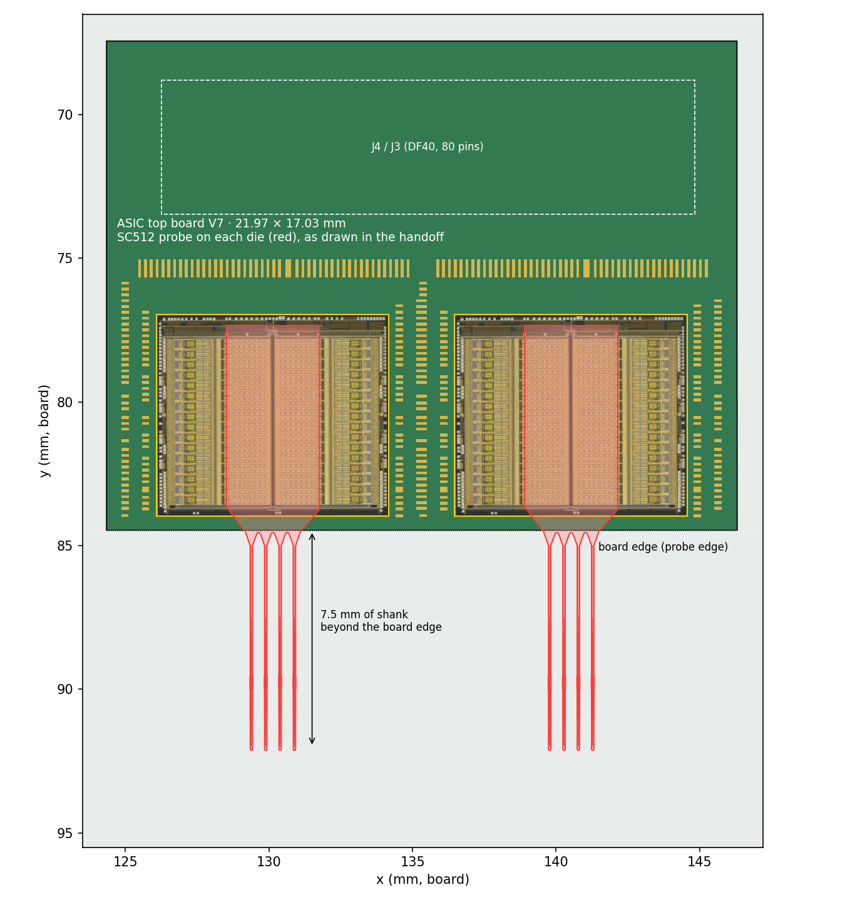
 Frontend, top: FPGA, Micro-HDMI socket J3
Frontend, top: FPGA, Micro-HDMI socket J3 Frontend, back: J1/J2 to the FPGA-LDO board
Frontend, back: J1/J2 to the FPGA-LDO board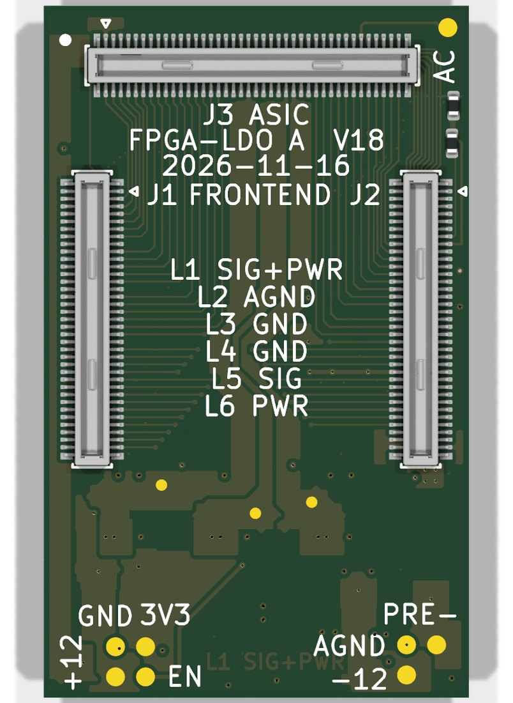
FPGA-LDO A, front: J1/J2, ASIC port J3 FPGA-LDO A, back: ASIC port J4, regulators
FPGA-LDO A, back: ASIC port J4, regulators ASIC bottom board, chip side
ASIC bottom board, chip side ASIC bottom board, back
ASIC bottom board, back- The connectors have no key. An ASIC board can be plugged in turned 180°. That would put the ±8 V supplies onto ASIC outputs and leave the board without ground. Pin-1 marks are printed next to every connector, and since V15 each ASIC board is printed with TOP or BOTTOM on both faces; a mechanical key is still missing.
- Heat: see section 6.1.
- ASIC boards at the fabricator: PCBWay makes these boards, with the ENEPIG finish. Since V14 the files keep to the limits PCBWay publishes; PCBWay has not yet checked the files itself (AB-05).
- HDMI Extension Board enclosure: the XEM8310's heat sink does not fit the planned enclosure; measure the module's temperature in the closed box (HDMI-41).
- Test-frame tabs: the Frontend and the FPGA-LDO board are held in their test frames by small tabs with a row of holes. Free each board the way its frame says in print, and file the stubs flush (section B5).
- Housing and retention: set aside for now.
6.1Heat and mass (first estimates)
All the power a head uses ends up as heat in the head: about 1.2 W typically, up to about 2.5 W at worst. Most of it comes from the Frontend FPGA and its regulators; the eight ASICs make only about 0.08 W. Treating the head as a block with about 40 cm2 of surface, its surface would warm above the surrounding air by about:
| Head power | still air | light air flow |
|---|---|---|
| 1.2 W (typical) | about +29 °C | about +14 °C |
| 2.5 W (worst case) | about +62 °C | about +31 °C |
This is a rough first estimate. It ignores heat flowing into the cable or the animal and any hot spots. Some heat reaches the ASIC boards and probes through the connectors. The bare boards weigh about 6.5 g, so a complete head is likely 8–10 g. Measure temperature and weight on the first assembled head.
Design details heat estimate method
Surface rise = P / (h A) with A ≈ 40 cm2; still air h ≈ 10 W/m2K, light air flow h ≈ 20 W/m2K.
6.2Grounding with several heads (suggestion)
“Ground” is the 0 V reference that all signals are measured against. With several heads on one animal, ground must connect in one place only; otherwise currents can loop between heads and add mains hum (50/60 Hz noise) to the recordings. Each head's ground already returns through its cable to the HDMI Extension Board, and from there to the PC and the 12 V adapter. Suggested practice:
- Use one ground electrode in the animal for the whole system (one skull screw or wire). It is also the return path for stimulation current.
- Run one short wire from each head to that electrode, all meeting at one point. Do not chain heads together, and do not add a second connection to the animal.
- On each head, connect the wire to analog ground: test point TP6 on the FPGA-LDO board. The ±8 V stimulation supply is referenced to it (to be confirmed with the ASIC designer).
- Use each probe's reference site (REF) only as the recording reference.
- Connect the Faraday cage (the metal screen around the setup) to the HDMI Extension Board's ground at one point (a DGND hole of J920).
- Use a double-insulated (two-pin) 12 V adapter. If you record over USB, use a battery-powered laptop or a USB isolator.
- With one head powered, measure leakage to mains earth and the 50/60 Hz noise; then add heads one at a time.
7Limits and open items
In short. These are the main design values, and the questions that are still open. None of the values has been measured yet.
| Item | Design value (not yet tested) |
|---|---|
| 12 V input | 10.8–13.2 V, center pin positive, adapter rated above 5 A |
| Current per port | Turns off above 0.637 A (at least) at 5 V |
| Head current at 3.3 V | About 0.32 A typical, 0.68 A worst case (estimate) |
| ASIC supplies | 1.50 V × 6, 0.75 V, ±8.06 V |
| Stimulation | Up to about 22.5 µA; full current only into sites of about 350 kΩ or less |
| Recording | 512 channels × 31.25 kS/s × 12 bits per ASIC |
Still open. The last column is the tracking number used in the design records.
| What is not settled | Who or what settles it | Tracking |
|---|---|---|
| ASIC details: a check of the capacitor values, the bond diagram, chip and bonding-wire height, current on each supply, standby current of the ±8 V supply, stimulator swing at ±8 V, electrode impedance, output timing | The ASIC designer | AB-18, AB-06, A2-5 |
| FPGA power calculation; running both FPGA pin lists (the Frontend's is pin file V4) through the tools; timing check for ASIC3 and ASIC7 | Vivado (FPGA tools) | – |
| Cable: buy, test all 19 wires, check the head's 5 V (TP14) under load, check the plug size | First cables | – |
| ASIC boards: PCBWay's own check of the fabrication files, among them how it measures the spacing between vias and whether it accepts the finest lines (0.076 mm) with the ENEPIG finish | PCBWay | AB-05 |
| Parts JLC cannot place yet (Frontend U7, R13, U15; FPGA-LDO A U1; HDMI MC1, MC2, J4) | Parts step | FE-05, LDOA-07, HDMI-42 |
| Grounding plan for eight heads on one animal (suggestion in section 6.2) | Test with the first heads | SYS-56 |
| The connectors have no mechanical key; line up the pin-1 marks before mating | User guide | SYS-09 |
| The FPGA cannot read back the shared stimulation settings | Firmware rule | SYS-60 |
| A running PC board drives clock and command into a head that is not powered yet; keep a port's outputs off until the head answers | Firmware rule | SYS-88 |
| Head heat (estimated surface rise +14 to +62 °C), head weight about 8–10 g, XEM8310 temperature in the closed enclosure | Measure on the first head | SYS-03, HDMI-41 |
| Everything here is calculated, not measured: currents, heat, timing and every supply voltage (among them MGTAVCC on Frontend test point TP7, section 2.2) | First assembled head | – |
Part B · User Guide
B1What you need
- One HDMI Extension Board with an Opal Kelly XEM8310 module fitted on its three module connectors (MC1–MC3).
- A 12 V power adapter: center pin positive, 5.5 mm plug with a 2.0 mm pin, 10.8–13.2 V, rated above 5 A.
- For each head: one Frontend, one FPGA-LDO A board, two bottom and two top ASIC boards, and one Micro-HDMI to Micro-HDMI cable (MyCableMart 3 ft “with Ethernet”, Amazon B014HMWWHA, or any cable meeting section 2.6).
- A PC. With one head, a USB 3 port is enough. With two or more heads, the PC needs a free PCIe x4 (or wider) slot.
- A USB-C cable for loading programs (JTAG); a multimeter; ideally a bench power supply with a current limit.
- For checking a board while it is still in its test frame: jumper wires or a ribbon cable for a pin header with 2.54 mm spacing (16 pins on the Frontend's frame, 20 pins on the FPGA-LDO board's frame).
B2Assembling a head
- Take the Frontend and the FPGA-LDO board out of their test frames, after the bench checks in section B5. The ASIC boards have no frame.
- Unplug the head's cable before plugging in or removing any board in the head.
- Check the orientation of every ASIC board. The board-to-board connectors (DF40) have no key, so an ASIC board can be plugged in turned 180°. Turned around, the ±8 V supplies land on ASIC data and clock outputs and the board has no ground; this would very likely destroy both ASICs and their probes. Line up the pin-1 marks and the board outlines, mark each board's orientation, and check it with the power off before every plug-in. Every ASIC board is printed with TOP or BOTTOM on both faces: a BOTTOM board plugs onto the FPGA-LDO board, and a TOP board plugs onto a BOTTOM board.
- Press each connector pair straight together; do not rock it. These connectors are rated for about 30 plug-in cycles.
- Build the stack on the FPGA-LDO A board:
- a bottom ASIC board on port J3 (front) and another on port J4 (back);
- a top ASIC board on each bottom board;
- the Frontend on J1 and J2 (front).
B3Connecting the system
- Put the HDMI Extension Board in a PCIe slot of the PC, or on the bench if you will use USB only. Its 12 V adapter is always needed.
- Connect the XEM8310 module's USB socket to the PC. For loading programs, also connect the USB-C socket J500 to the PC.
- Connect one cable per head, from a port P1–P8 to the Frontend's Micro-HDMI socket (J3). Ports P3–P6 also carry the separate SYNC wire pair (section 3).
B4Power-up
- Use only the specified adapter. The 12 V input has no fuse and no protection against a reversed plug. Use one 12 V source only.
- With no heads connected, plug in the 12 V. About 1 ms after the 5 V supply is steady, all eight ports switch on together.
- In the XEM8310's device settings, set VIO1 to 1.8 V. Check it with a meter at the VIO1 hole of J920.
- Plug in the heads. Each head powers up on its own, in this order: 3.3 V, the FPGA core, 1.8 V and 1.5 V, then the transmitter supplies; then the FPGA loads its program from the flash memory. The ASIC supplies, including ±8 V, start about 15–23 ms after the 3.3 V. Until the FPGA has loaded, resistors hold the stimulation and clock lines off.
B5First checks
Check the system one stage at a time, so that a fault shows up before it can damage the next board. To measure a voltage, set the multimeter to DC volts, touch the black probe to a ground test point (given for each stage) and the red probe to the test point being checked. “High” means close to the supply voltage of that signal; “low” means close to 0 V. Every test point is a small round bare pad, named TP and a number in the design files. The two maps below show where each one is, because the small boards have little room for printed names.


Before assembly: checking a board in its test frame. The Frontend and the FPGA-LDO board each arrive inside a test frame: a 70 × 70 mm carrier board that holds the small board by break-off tabs. Short copper traces cross the tabs to a pin header on the frame (a shrouded “box” header with pins 2.54 mm apart), and the name of each pin is printed beside it. A board can therefore be powered and checked on the bench before it is broken out of its frame. Use a bench supply with its current limit set low, and connect the ground wire first. None of this has been tried on real boards yet.
Frontend, test frame V3 (16-pin header JT1). Power goes in as 5 V on pin 13, and its return goes on pin 16. The Frontend then makes its own 3.3 V, which appears on pins 1 and 2. These two pins are an output; the frame marks them “3V3 OUT”. Do not connect a supply to pins 1 and 2 while 5 V is on. Powering the board through pins 1 and 2 with no 5 V has not been assessed, so do not do that either.
| Header pin | Printed name | What it is | You should read |
|---|---|---|---|
| 13 | 5V IN | Power input from the bench supply | 5 V (set on the supply) |
| 16 | GND | Return of the 5 V supply | 0 V |
| 1 and 2 | 3V3 OUT | The 3.3 V made by the Frontend (output of regulator U16) | 3.3 V |
| 4 | RAILPG | “All supplies good” signal (BOOT_RAILS_PG_3V3) | high (about 3.3 V) |
| 8 | INIT_B | FPGA ready to load (FPGA_INIT_B) | high (about 1.8 V) |
| 10 | VCCO | FPGA input/output supply | 1.5 V |
| 14 | VCCAUX | FPGA auxiliary supply | 1.8 V |
| 3, 5, 6, 7, 9, 11, 12, 15 | GND | Ground | 0 V |
FPGA-LDO board, test frame V4 (20-pin header J5). Power goes in as 3.3 V on pins 13 and 15, which are joined on the frame; the return goes on a GND pin. In a head, this 3.3 V comes from the Frontend.
| Header pin | Printed name | What it is | You should read |
|---|---|---|---|
| 13 and 15 | 3V3 | Power input from the bench supply | 3.3 V (set on the supply) |
| 2, 8, 14, 16, 17, 20 | GND | Digital ground; return of the supply | 0 V |
| 12 | AGND | Analog ground | 0 V |
| 6 | EN | “Start ASIC supplies” line (EN_ASIC_RAILS); pull it to ground to keep the ASIC supplies off | rises to about 3.3 V |
| 4 / 10 | +12V / -12V | Stimulation pre-supply | about +12 V / -12 V |
| 18 | -PRE | The -12 V after jumper JP2 (STIM_PRE_NEG) | about -12 V |
| 11 | VADC | ASIC supply VDD_ADC | 1.5 V |
| 19 | CGEN | ASIC supply VDD_CGEN | 1.5 V |
| 1 | AC_IN | Test-signal input shared by all eight ASICs; feed 0 to 1.5 V | – |
| 3, 5, 7, 9 | STCHB, STEN, STCLK, STRT | The stimulation control lines STIM_CHB, STIM_EN, STIM_CLK and STIM_START, which a signal generator can drive when no Frontend is fitted | low (0 V) when not driven |
Breaking a board out of its frame. Each frame says in print how to free its board. On the Frontend's frame, snap the two tabs on the south edge (the lower edge when the printed text is upright), cut the tabs on the west and east edges with a fine cutter, and file the stubs flush. On the FPGA-LDO board's frame, score both faces along the row of holes at each tab, then break the tab and file the stub flush; afterwards check that the short traces that end at the board edge do not touch each other. File the north edge of the FPGA-LDO board (the end with the ASIC ports) gently: near its north-west corner one signal line runs only 0.41 mm inside that edge for about 2.5 mm, under the solder mask.
Stage 1: HDMI Extension Board alone (no heads). Black probe on TP709 (ground, top side) or a DGND hole of J920.
| Test point | Side | What it is | You should read |
|---|---|---|---|
| TP710 | top | 12 V input | about 12 V |
| C704 pin 1 (or TP700) | top | 5 V for the heads (FE_5V) | 5.02 V |
| TP701–TP708 | back | 5 V at ports P1–P8 | about 5 V each |
| J920 holes | top | module supplies | +1.2 V, +1.8 V and +3.3 V holes read their names; VIO1 reads 1.8 V once set |
| Red LEDs D701–D708 | back | port overload | all off |
With the XEM8310 module fitted, its edge covers most of TP700. Measure the same 5 V on pin 1 of C704 or C706, the output capacitors beside U700, which stay clear of the module.
Stage 2: one Frontend alone on a cable. Black probe on TP1 or TP13 (ground, top side).
| Test point | Side | What it is | You should read |
|---|---|---|---|
| TP14 | top | 5 V arriving from the cable (VIN_5V) | above 3.6 V |
| TP2 | top | 3.3 V supply (VIN_3V3) | 3.3 V |
| TP3 | top | switched 3.3 V (SWITCHED_3V3) | 3.3 V |
| TP4 | top | FPGA core (VCCINT_1V0) | 1.0 V |
| TP5 and TP9 | top | FPGA auxiliary (VCCAUX_1V8) | 1.8 V |
| TP6 | top | FPGA input/output (VCCO_1V5) | 1.5 V |
| TP7 | top | transmitter supply (MGTAVCC_1V0) | 1.0 V (1.008 V by design; it must lie between 0.97 and 1.03 V) |
| TP8 | top | transmitter output supply (MGTAVTT_1V2) | 1.2 V |
| TP10 | top | “all supplies good” signal (BOOT_RAILS_PG_3V3) | high (about 3.3 V) |
| TP11 | top | FPGA ready to load (FPGA_INIT_B) | high (about 1.8 V) |
| TP12 | back | FPGA loaded (FPGA_DONE) | high (about 1.8 V) once the program has loaded |
To load a program into the Frontend's flash memory: on the HDMI Extension Board, turn switch SW601 OFF; turn the rotary switch SW600 to the target (position 1 = XEM8310 module, positions 2–9 = ports P1–P8); turn SW601 back on; then program over the USB-C socket J500.
Stage 3: add the FPGA-LDO A board. Black probe on TP5 (ground) or TP6 (analog ground), both on the front. The two grounds are joined on this board, so either works for these readings. The front-side pads TP1–TP6 and TP9 sit at the far end of the board and stay reachable with the Frontend plugged in.
| Test point | Side | What it is | You should read |
|---|---|---|---|
| TP1 | front | 3.3 V from the Frontend (VIN_3V3) | 3.3 V |
| TP4 | front | “start ASIC supplies” (EN_ASIC_RAILS) | rises to about 3.3 V; the supplies start 15–23 ms after power-on |
| TP2 / TP3 | front | stimulation pre-supply (STIM_POS_12V / STIM_NEG_12V) | about +12 V / -12 V |
| TP8 / TP9 | back / front | the same ±12 V after jumpers JP1/JP2 (STIM_PRE_POS / STIM_PRE_NEG) | about +12 V / -12 V |
| TP12, TP14, TP16 | back | ASIC supplies VDD_ADC, DVDD, VDD_CGEN | 1.5 V each; reachable when the head is assembled |
| TP11, TP15 | front | ASIC supplies VDD_FE, REF_VDD | 1.5 V each |
| TP17 | front | ASIC supply REF_VCM | 0.75 V |
| C402 | back | ASIC supply VDD_DRIVER (no test pad) | 1.5 V |
| C902 / C1002 | back | stimulation supplies (no test pad) | +8.06 V / -8.06 V |
TP11, TP15 and TP17 are under the Frontend. Measure them with the FPGA-LDO board powered on its own through TP1 (3.3 V from a bench supply), without the Frontend.
Stage 4: add one ASIC port at a time. After each port, check the stage 3 supplies again, and check TP14 on the Frontend. With everything running, TP14 must stay above about 3.6 V.
More test pads, for an oscilloscope. On 18 Nov 2026 the HDMI Extension Board, the Frontend and the FPGA-LDO board each received extra bare pads, so that their signals can be checked with an oscilloscope. A ground pad sits close to most of them, for the probe's ground spring. The pads were kept off the fastest lines (the cable's data, clock and command pairs), where a pad would disturb the signal.
| Board | Added pads |
|---|---|
| HDMI Extension Board V39 | 20 pads, TP720–TP739: the programming (JTAG) lines on both sides of the level shifter, the three signals that check a head's voltage before programming, the USB supply, the port-enable and power-good signals, and 8 ground pads. 18 are on the back and 2 on the top; all can be reached with the XEM8310 fitted. |
| Frontend V13 | 33 pads, TP15–TP47, which makes 47 in all. On the top: the transmitter's 1.4 V input supply (TP16), the 1.8 V power-good signal (TP19) and 5 ground pads. On the back: 17 signal pads (two supplies, three clocks, five reset, enable and status lines, one flash memory line, the settings clock and latch of ASIC7 and ASIC8, two SYNC lines and two data lines) and 9 ground pads. The back faces the FPGA-LDO board, so its pads can be reached only while the Frontend is on its own. |
| FPGA-LDO A V24 | 12 pads on the back, TP20–TP31, which makes 28 in all: three lines of ASIC4 (TP20–TP22), the settings clock of ASIC3 and ASIC4 (TP24), STIM_START (TP25), the latch of the bottom board on port J4 (TP27), FE_RESET (TP28), three digital-ground pads (TP23, TP26, TP29) and two analog-ground pads (TP30, TP31). All 12 stay reachable in an assembled head. |
The latch of the bottom board on port J3 (BOARD3_SPI_LATCH) has no test pad. Its pull-down resistor R28 is the place to probe it, and that is possible only with no ASIC board on port J4, because R28 sits under that board.
New cables: before first use, check all 19 wires for continuity with the meter.
B6Troubleshooting
| Problem | Likely cause and what to do |
|---|---|
| Red LED next to a port | The port draws over 0.64 A, is too hot, or is fed back from the head; the switch keeps retrying. Unplug the head, then check its cable and boards. |
| No port powers up | The 5 V supply is not within 94–107 % of its target. Check the adapter, and measure the 5 V on C704 pin 1. |
| TP14 below 3.6 V under load | The cable's resistance is too high. Use the 3 ft cable or one with thicker wires. |
| FPGA does not load (TP12 DONE stays low) | A supply is missing (TP10 BOOT_RAILS_PG_3V3 low), or the flash memory has no program. Check TP2–TP9, then load the program over JTAG. |
| No recorded data reaches the PC | The data polarity or the data rate is wrong. Set TXPOLARITY = 1 in the Frontend program, and use the same data rate at both ends. |
| Cannot program a head (JTAG) | The cable lacks pin 2 (use a cable “with Ethernet”), or VIO1 is not 1.8 V. Check the cable's continuity and set VIO1. |
B7Words and abbreviations
- 8b/10b
- A way of coding fast serial data: every 8 data bits are sent as 10 bits, which keeps the signal balanced and lets the receiver find its clock. 80 % of the line rate carries data.
- ADC
- Analog-to-digital converter: turns a voltage into a number. Each ASIC measures with 12 bits.
- AGND
- Analog ground: the quiet 0 V reference for the recording circuits.
- ASIC
- Application-specific integrated circuit: here, the custom recording and stimulation chip made for this project. Each has 512 recording and 128 stimulation channels.
- AWG
- American wire gauge: wire thickness. A larger number is a thinner wire.
- Bank
- A group of FPGA pins that share one supply voltage.
- CLKH
- The clock the Frontend sends to the ASICs.
- DDR
- Double data rate: two bits sent per clock tick, one on each edge.
- DF40
- Hirose's tiny board-to-board connectors used throughout the head; they hold boards 1.5 mm apart.
- DGND
- Digital ground: the 0 V return for digital signals. It joins AGND at one point on the FPGA-LDO board.
- ENEPIG
- A gold-over-palladium surface finish on a circuit board, needed for wire bonding.
- ESD
- Electrostatic discharge; ESD protection parts absorb static shocks on connector pins.
- Flash
- A memory chip that keeps its contents without power; it holds the FPGA's program.
- FPGA
- Field-programmable gate array: a chip whose logic is set by a program loaded at power-up. The Frontend has one (AMD Artix-7); the XEM8310 module has another.
- Frontend
- The Frontend FPGA board: the head's controller board.
- Gb/s
- Gigabits per second (a billion bits per second). Mb/s is a million bits per second.
- GTP
- The Frontend FPGA's built-in high-speed transmitter, which sends the data down the cable. GTY is the matching receiver type on the XEM8310.
- HDI
- High-density interconnect: a circuit board with very small holes and fine lines.
- Head
- The stack of five small boards worn on the animal: one Frontend, one FPGA-LDO board and four ASIC boards (eight ASICs).
- Impedance
- How strongly an electrode resists current into the tissue, in ohms (Ω).
- JTAG
- The standard way of loading programs into FPGAs over a few wires.
- kS/s
- Thousand samples per second: how often each channel is measured.
- Lane
- One fast wire pair carrying a serial data stream.
- Latch
- The line that tells an ASIC to apply the settings it has just received over SPI. Each ASIC board has its own.
- LDO
- Low-dropout regulator: a quiet type of voltage regulator. The FPGA-LDO board is named after them.
- LED
- Light-emitting diode: a small indicator light.
- LVDS
- Low-voltage differential signalling: a signal sent on two wires as opposite copies, which resists noise.
- MiB/s
- Mebibytes per second; 1 MiB/s is about 8.4 Mb/s.
- Net
- One electrical connection in a design, with a name such as
VIN_3V3. - Net tie
- A deliberate single connection point between two grounds.
- PCIe
- PCI Express: the PC's internal expansion slot. “x4” means four lanes.
- Pin map
- The agreed list of which signal goes on which connector pin.
- PLL
- Phase-locked loop: a circuit that makes a faster clock from a slower one.
- Power good
- A signal from a regulator saying its output is at the right voltage; it starts the next regulator.
- Pull-down / pull-up
- A resistor that holds a line low (or high) when nothing else drives it.
- Rail
- One supply voltage that powers several parts.
- Regulator
- A part that turns one voltage into another, steady one.
- SPI
- Serial peripheral interface: a simple clocked serial link the FPGA uses to send settings to each ASIC.
- SYNC
- A timing marker that lines up the start of recording across ASICs and heads.
- Test frame
- A carrier board around a small board, joined to it by break-off tabs, with a pin header for bench checks. The Frontend and the FPGA-LDO board are made in one.
- TP
- Test point: a small pad for measuring a voltage with a meter.
- Via
- A small plated hole that joins copper on different layers of a circuit board.
- Vivado
- AMD's software for building and checking FPGA designs.
- VIO1
- The adjustable I/O voltage of the XEM8310 module's bank 64; it must be 1.8 V.
- XEM8310
- The ready-made Opal Kelly FPGA module that plugs onto the HDMI Extension Board.
- Part labels
- J connector, U chip, R resistor, C capacitor, D diode or LED, SW switch, Y oscillator, JP jumper, MC module connector.